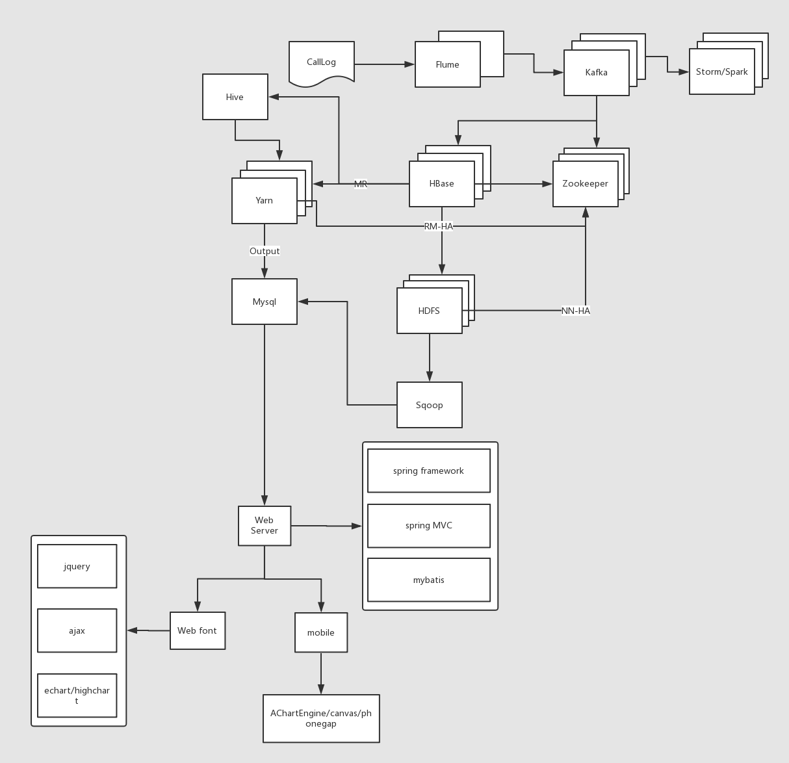
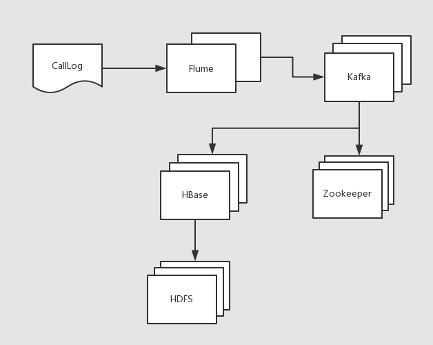
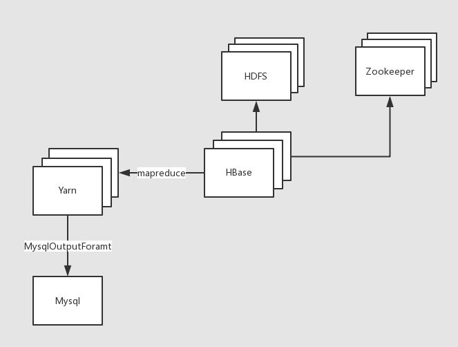
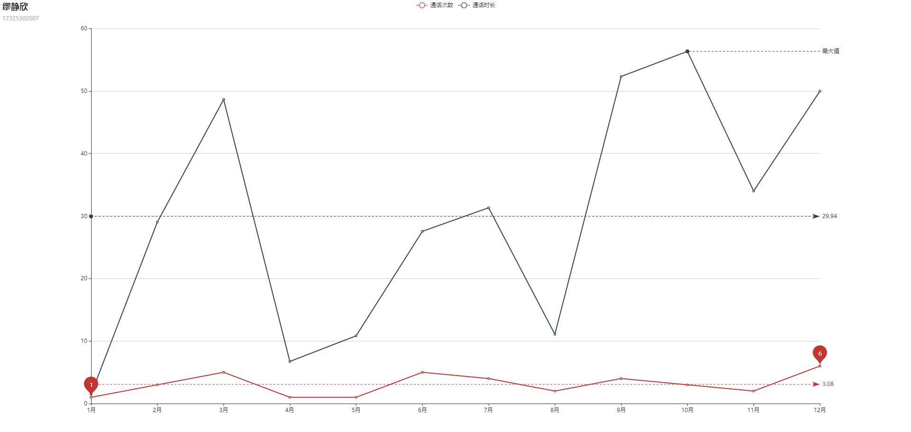
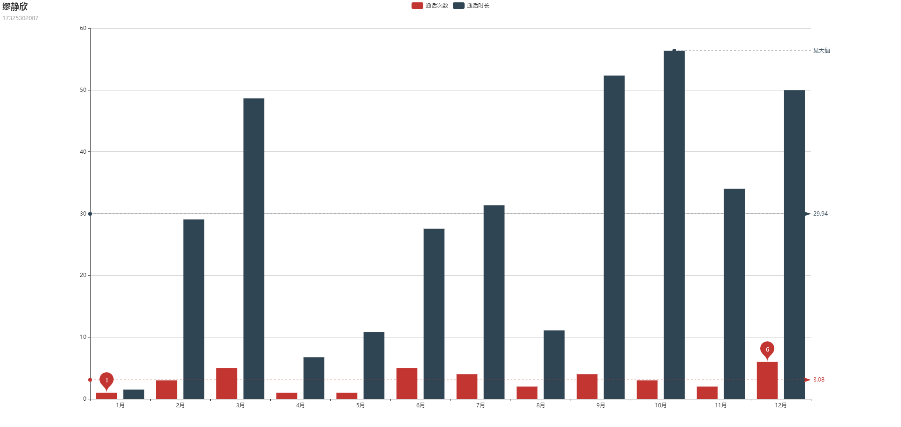

|
日期 |
修订版本 |
修改章节 |
修改描述 |
作者 |
|
2017-09-30 |
1.0 |
|
内部稿 |
尽际 |
|
2017-10-27 |
1.1 |
表结构变化，需更新数据库文件 |
内部稿 |
尽际 |
|
2017-11-03 |
1.2 |
修改BUG，范围扫描数据出现的错误 |
内部稿 |
尽际 |
|
2017-11-05 |
1.3 |
DimensionConverter缓存key修复，数据批量插入计数器count修复 |
内部稿 |
尽际 |
目录
3.2.3、编写测试单元：范围查找数据（本方案已弃用，但需掌握）
一、项目背景
通信运营商每时每刻会产生大量的通信数据，例如通话记录，短信记录，彩信记录，第三方服务资费等等繁多信息。数据量如此巨大，除了要满足用户的实时查询和展示之外，还需要定时定期的对已有数据进行离线的分析处理。例如，当日话单，月度话单，季度话单，年度话单，通话详情，通话记录等等。我们以此为背景，寻找一个切入点，学习其中的方法论。
二、项目架构

三、项目实现
系统环境：
|
系统 |
版本 |
|
windows |
10
专业版 |
|
linux |
CentOS
6.8 or CentOS7.2 1611内核 |
开发工具：
|
工具 |
版本 |
|
idea |
2017.2.5旗舰版 |
|
maven |
3.3.9 |
|
JDK |
1.8+ |
尖叫提示：idea2017.2.5必须使用maven3.3.9，不要使用maven3.5，有部分兼容性问题
集群环境：
|
框架 |
版本 |
|
hadoop |
cdh5.3.6-2.5.0 |
|
zookeeper |
cdh5.3.6-3.4.5 |
|
hbase |
cdh5.3.6-0.98 |
|
hive |
cdh5.3.6-0.13 |
|
flume |
cdh5.3.6-1.5.0 |
|
kafka |
2.10-0.8.2.1 |
硬件环境：
|
|
linux01 |
linux02 |
linux03 |
|
内存 |
4G |
2G |
2G |
|
CPU |
2核 |
1核 |
1核 |
|
硬盘 |
50G |
50G |
50G |
3.1、数据生产
此情此景，对于该模块的业务，即数据生产过程，一般并不会让你来进行操作，数据生产是一套完整且严密的体系，这样可以保证数据的鲁棒性。但是如果涉及到项目的一体化方案的设计（数据的产生、存储、分析、展示），则必须清楚每一个环节是如何处理的，包括其中每个环境可能隐藏的问题；数据结构，数据内容可能出现的问题。
3.1.2、数据结构
我们将在HBase中存储两个电话号码，以及通话建立的时间和通话持续时间，最后再加上一个flag作为判断第一个电话号码是否为主叫。姓名字段的存储我们可以放置于另外一张表做关联查询，当然也可以插入到当前表中。
|
列名 |
解释 |
举例 |
|
call1 |
第一个手机号码 |
15369468720 |
|
call1_name |
第一个手机号码人姓名(非必须) |
李雁 |
|
call2 |
第二个手机号码 |
19920860202 |
|
call2_name |
第二个手机号码人姓名(非必须) |
卫艺 |
|
date_time |
建立通话的时间 |
20171017081520 |
|
date_time_ts |
建立通话的时间（时间戳形式） |
|
|
duration |
通话持续时间（秒） |
0600 |
|
flag |
用于标记本次通话第一个字段(call1)是主叫还是被叫 |
1为主叫，0为被叫 |
3.1.3、编写代码
思路：
a) 创建Java集合类存放模拟的电话号码和联系人；
b) 随机选取两个手机号码当做“主叫”与“被叫”（注意判断两个手机号不能重复），产出call1与call2字段数据；
c) 创建随机生成通话建立时间的方法，可指定随机范围，最后生成通话建立时间，产出date_time字段数据；
d) 随机一个通话时长，单位：秒，产出duration字段数据；
e)、将产出的一条数据拼接封装到一个字符串中；
f)、使用IO操作将产出的一条通话数据写入到本地文件中;
新建module项目：ct_producer
pom.xml文件配置：
|
<project xmlns="http://maven.apache.org/POM/4.0.0" xmlns:xsi="http://www.w3.org/2001/XMLSchema-instance" xsi:schemaLocation="http://maven.apache.org/POM/4.0.0 http://maven.apache.org/xsd/maven-4.0.0.xsd"> <modelVersion>4.0.0</modelVersion> <groupId>com.china</groupId> <artifactId>ct_producer</artifactId> <version>1.0-SNAPSHOT</version> <packaging>jar</packaging> <name>ct_producer</name> <url>http://maven.apache.org</url> <properties> <project.build.sourceEncoding>UTF-8</project.build.sourceEncoding> </properties> <dependencies> <!-- https://mvnrepository.com/artifact/junit/junit --> <dependency> <groupId>junit</groupId> <artifactId>junit</artifactId> <version>4.12</version> <scope>test</scope> </dependency> </dependencies> <build> <plugins> <plugin> <groupId>org.apache.maven.plugins</groupId> <artifactId>maven-surefire-plugin</artifactId> <version>2.12.4</version> <configuration> <skipTests>true</skipTests> </configuration> </plugin> </plugins> </build> </project> |
1) 随机输入一些手机号码以及联系人，保存于Java的集合中。
新建类：ProductLog
|
//存放联系人电话与姓名的映射 public Map<String, String> contacts = null; //存放联系人电话号码 public List<String> phoneList = null; public void initContacts() { contacts = new HashMap<String, String>(); phoneList = new ArrayList<String>(); phoneList.add("15369468720"); phoneList.add("19920860202"); phoneList.add("18411925860"); phoneList.add("14473548449"); phoneList.add("18749966182"); phoneList.add("19379884788"); phoneList.add("19335715448"); phoneList.add("18503558939"); phoneList.add("13407209608"); phoneList.add("15596505995"); phoneList.add("17519874292"); phoneList.add("15178485516"); phoneList.add("19877232369"); phoneList.add("18706287692"); phoneList.add("18944239644"); phoneList.add("17325302007"); phoneList.add("18839074540"); phoneList.add("19879419704"); phoneList.add("16480981069"); phoneList.add("18674257265"); phoneList.add("18302820904"); phoneList.add("15133295266"); phoneList.add("17868457605"); phoneList.add("15490732767"); phoneList.add("15064972307"); contacts.put("15369468720", "李雁"); contacts.put("19920860202", "卫艺"); contacts.put("18411925860", "仰莉"); contacts.put("14473548449", "陶欣悦"); contacts.put("18749966182", "施梅梅"); contacts.put("19379884788", "金虹霖"); contacts.put("19335715448", "魏明艳"); contacts.put("18503558939", "华贞"); contacts.put("13407209608", "华啟倩"); contacts.put("15596505995", "仲采绿"); contacts.put("17519874292", "卫丹"); contacts.put("15178485516", "戚丽红"); contacts.put("19877232369", "何翠柔"); contacts.put("18706287692", "钱溶艳"); contacts.put("18944239644", "钱琳"); contacts.put("17325302007", "缪静欣"); contacts.put("18839074540", "焦秋菊"); contacts.put("19879419704", "吕访琴"); contacts.put("16480981069", "沈丹"); contacts.put("18674257265", "褚美丽"); contacts.put("18302820904", "孙怡"); contacts.put("15133295266", "许婵"); contacts.put("17868457605", "曹红恋"); contacts.put("15490732767", "吕柔"); contacts.put("15064972307", "冯怜云"); } |
2) 创建随机生成通话时间的方法：randomDate
该时间生成后的格式为yyyy-MM-dd HH:mm:ss，并使之可以根据传入的起始时间和结束时间来随机生成。
|
/** * @Description: 随机建立通话的时间, 时间格式：yyyy-MM-dd * @author: JinJi * @date: * @version: V1.0 */ private Calendar randomDate(String startDate, String endDate) { SimpleDateFormat simpleDateFormat = new SimpleDateFormat("yyyy-MM-dd"); try { Date start = simpleDateFormat.parse(startDate); Date end = simpleDateFormat.parse(endDate); if (start.getTime() > end.getTime()) return null; long resultTime = start.getTime() + (long) (Math.random() * (end.getTime() - start.getTime())); Calendar calendar = Calendar.getInstance(); calendar.setTimeInMillis(resultTime); return calendar; } catch (ParseException e) { e.printStackTrace(); } return null; } |
3) 创建生产日志一条日志的方法：productLog
随机抽取两个电话号码，随机产生通话建立时间，随机通话时长，将这几个字段拼接成一个字符串，然后return，便可以产生一条通话的记录。需要注意的是，如果随机出的两个电话号码一样，需要重新随机（随机过程可优化，但并非此次重点）。通话时长的随机为20分钟以内，即：60秒 * 20，并格式化为4位数字，例如：0600(10分钟)。
|
/** * @Description: 生成Log日志 * @author: JinJi * @date: * @version: V1.0 */ private String productLog() { int call1Index = random.nextInt(phoneList.size()); int call2Index = -1; String call1 = phoneList.get(call1Index); String call2 = null; while (true) { call2Index = random.nextInt(phoneList.size()); call2 = phoneList.get(call2Index); if (!call1.equals(call2)) break; } //通话时长，单位：秒 int duration = random.nextInt(60 * 20) + 1; String durationString = new DecimalFormat("0000").format(duration); //通话建立时间:yyyy-MM-dd,月份：0~11，天：1~31 Calendar calendarDate = randomDate("2017-01-01", "2017-10-17"); String dateString = new SimpleDateFormat("yyyy-MM-dd HH:mm:ss").format(calendarDate.getTime()); //主叫人姓名 String call1Name = contacts.get(String.valueOf(call1)); //被叫人姓名 String call2Name = contacts.get(String.valueOf(call2)); StringBuilder logBuilder = new StringBuilder(); // logBuilder.append(caller + ",") // .append(callerName + ",") // .append(callee + ",") // .append(calleeName + ",") // .append(dateString + ",") // .append(durationString); logBuilder.append(call1 + ",") .append(call2 + ",") .append(dateString + ",") .append(durationString); System.out.println(logBuilder); try { Thread.sleep(500); } catch (InterruptedException e) { e.printStackTrace(); } return logBuilder.toString(); } |
4) 创建写入日志方法：writeLog
productLog每产生一条日志，便将日志写入到本地文件中，所以建立一个专门用于日志写入的方法，需要涉及到IO操作，需要注意的是，输出流每次写一条日之后需要flush，不然可能导致积攒多条数据才输出一次。最后需要将productLog方法放置于while死循环中执行。
|
/** * @Description: 将产生的日志写入到本地文件calllog中 * @author: JinJi * @date: * @version: V1.0 */ public void writeLog(String filePath, ProductLog productLog) { OutputStreamWriter outputStreamWriter = null; try { outputStreamWriter = new OutputStreamWriter(new FileOutputStream(filePath, true),"UTF-8"); // for (int i = 1; i <= CALL_COUNT; i++) { // String log = productLog.productLog(); // if(i == CALL_COUNT){ // outputStreamWriter.write(log); // }else{ // outputStreamWriter.write(log + "\n"); // } // } while(true){ String log = productLog.productLog(); outputStreamWriter.write(log + "\n"); outputStreamWriter.flush(); } } catch (IOException e) { e.printStackTrace(); }finally { try { outputStreamWriter.flush(); outputStreamWriter.close(); } catch (IOException e) { e.printStackTrace(); } } } |
5) 在主函数中初始化以上逻辑，并测试：
|
public static void main(String[] args) { if(args == null || args.length <= 0) { System.out.println("no arguments"); System.exit(1); // args = new String[]{PATH_LOG}; } ProductLog productLog = new ProductLog(); productLog.initContacts(); productLog.writeLog(args[0], productLog); } |
3.1.4、打包测试
1) 打包方式
如果在eclipse中，则需要如下maven参数进行打包：
|
-P local clean package：不打包第三方依赖 -P dev clean package install：打包第三方依赖 |
如果在idea中，则需要在maven project视图中一次选择如下按钮进行打包：详细操作请参看课堂演示
|
LifeCycle --> package(双击) |
分别在Windows上和Linux中进行测试：
|
java -cp ct_producer-1.0-SNAPSHOT.jar com.china.producer.ProductLog /本地目录/callLog.csv |
2) 为日志生成任务编写bash脚本：productlog.sh
|
#!/bin/bash java -cp /home/admin/call/ct_product-0.0.1-SNAPSHOT.jar com.china.ct_product.ProductLog /home/admin/call/calllog.csv |
3.2、数据采集/消费(存储)
欢迎来到数据采集模块（消费），在企业中你要清楚流式数据采集框架flume和kafka的定位是什么。我们在此需要将实时数据通过flume采集到kafka然后供给给hbase消费。
flume：cloudera公司研发
适合下游数据消费者不多的情况；
适合数据安全性要求不高的操作；
适合与Hadoop生态圈对接的操作。
kafka：linkedin公司研发
适合数据下游消费众多的情况；
适合数据安全性要求较高的操作（支持replication）；
因此我们常用的一种模型是：
线上数据 --> flume --> kafka --> flume(根据情景增删该流程) --> HDFS
消费存储模块流程图：

3.2.1、数据采集：采集实时产生的数据到kafka集群
思路：
a) 配置kafka，启动zookeeper和kafka集群；
b) 创建kafka主题；
c) 启动kafka控制台消费者（此消费者只用于测试使用）；
d) 配置flume，监控日志文件；
e) 启动flume监控任务；
f) 运行日志生产脚本；
g)、观察测试。
1) 配置kafka
server.properties
|
# Licensed to the Apache Software Foundation (ASF) under one or more # contributor license agreements. See the NOTICE file distributed with # this work for additional information regarding copyright ownership. # The ASF licenses this file to You under the Apache License, Version 2.0 # (the "License"); you may not use this file except in compliance with # the License. You may obtain a copy of the License at # # http://www.apache.org/licenses/LICENSE-2.0 # # Unless required by applicable law or agreed to in writing, software # distributed under the License is distributed on an "AS IS" BASIS, # WITHOUT WARRANTIES OR CONDITIONS OF ANY KIND, either express or implied. # See the License for the specific language governing permissions and # limitations under the License. # see kafka.server.KafkaConfig for additional details and defaults ############################# Server Basics ############################# # The id of the broker. This must be set to a unique integer for each broker. broker.id=0 ############################# Socket Server Settings ############################# # The port the socket server listens on port=9092 # Hostname the broker will bind to. If not set, the server will bind to all interfaces host.name=linux01 # Hostname the broker will advertise to producers and consumers. If not set, it uses the # value for "host.name" if configured. Otherwise, it will use the value returned from # java.net.InetAddress.getCanonicalHostName(). #advertised.host.name=<hostname routable by clients> # The port to publish to ZooKeeper for clients to use. If this is not set, # it will publish the same port that the broker binds to. #advertised.port=<port accessible by clients> # The number of threads handling network requests num.network.threads=3
# The number of threads doing disk I/O num.io.threads=8 # The send buffer (SO_SNDBUF) used by the socket server socket.send.buffer.bytes=102400 # The receive buffer (SO_RCVBUF) used by the socket server socket.receive.buffer.bytes=102400 # The maximum size of a request that the socket server will accept (protection against OOM) socket.request.max.bytes=104857600 ############################# Log Basics ############################# # A comma seperated list of directories under which to store log files log.dirs=/home/admin/modules/kafka_2.10-0.8.2.1/kafka0-logs # The default number of log partitions per topic. More partitions allow greater # parallelism for consumption, but this will also result in more files across # the brokers. num.partitions=1 # The number of threads per data directory to be used for log recovery at startup and flushing at shutdown. # This value is recommended to be increased for installations with data dirs located in RAID array. num.recovery.threads.per.data.dir=1 ############################# Log Flush Policy ############################# # Messages are immediately written to the filesystem but by default we only fsync() to sync # the OS cache lazily. The following configurations control the flush of data to disk. # There are a few important trade-offs here: # 1. Durability: Unflushed data may be lost if you are not using replication. # 2. Latency: Very large flush intervals may lead to latency spikes when the flush does occur as there will be a lot of data to flush. # 3. Throughput: The flush is generally the most expensive operation, and a small flush interval may lead to exceessive seeks. # The settings below allow one to configure the flush policy to flush data after a period of time or # every N messages (or both). This can be done globally and overridden on a per-topic basis. # The number of messages to accept before forcing a flush of data to disk #log.flush.interval.messages=10000 # The maximum amount of time a message can sit in a log before we force a flush #log.flush.interval.ms=1000 ############################# Log Retention Policy ############################# # The following configurations control the disposal of log segments. The policy can # be set to delete segments after a period of time, or after a given size has accumulated. # A segment will be deleted whenever *either* of these criteria are met. Deletion always happens # from the end of the log. # The minimum age of a log file to be eligible for deletion log.retention.hours=168 # A size-based retention policy for logs. Segments are pruned from the log as long as the remaining # segments don't drop below log.retention.bytes. #log.retention.bytes=1073741824 # The maximum size of a log segment file. When this size is reached a new log segment will be created. log.segment.bytes=1073741824 # The interval at which log segments are checked to see if they can be deleted according # to the retention policies log.retention.check.interval.ms=300000 # By default the log cleaner is disabled and the log retention policy will default to just delete segments after their retention expires. # If log.cleaner.enable=true is set the cleaner will be enabled and individual logs can then be marked for log compaction. log.cleaner.enable=false ############################# Zookeeper ############################# # Zookeeper connection string (see zookeeper docs for details). # This is a comma separated host:port pairs, each corresponding to a zk # server. e.g. "127.0.0.1:3000,127.0.0.1:3001,127.0.0.1:3002". # You can also append an optional chroot string to the urls to specify the # root directory for all kafka znodes. zookeeper.connect=linux01:2181,linux02:2181,linux03:2181 # Timeout in ms for connecting to zookeeper zookeeper.connection.timeout.ms=6000 |
尖叫提示：注意配置中标红部分每台机器的server.properties文件不一样，分发之后记得对应变量重新配置。
2) 启动zookeeper，kafka集群
|
$ /home/admin/modules/kafka_2.10-0.8.2.1/bin/kafka-server-start.sh /home/admin/modules/kafka_2.10-0.8.2.1/config/server.properties |
3) 创建kafka主题
|
$ /home/admin/modules/kafka_2.10-0.8.2.1/bin/kafka-topics.sh --zookeeper linux01:2181 --topic calllog --create --replication-factor 1 --partitions 4 |
检查一下是否创建主题成功：
|
$ /home/admin/modules/kafka_2.10-0.8.2.1/bin/kafka-topics.sh --zookeeper linux01:2181 --list |
4) 启动kafka控制台消费者，等待flume信息的输入
|
$ /home/admin/modules/kafka_2.10-0.8.2.1/bin/kafka-console-consumer.sh --zookeeper linux01:2181 --topic calllog --from-beginning |
5) 配置flume(flume-kafka.conf)
|
# define a1.sources = r1 a1.sinks = k1 a1.channels = c1 # source a1.sources.r1.type = exec a1.sources.r1.command = tail -F -c +0 /home/admin/call/calllog.csv a1.sources.r1.shell = /bin/bash -c # sink a1.sinks.k1.type = org.apache.flume.sink.kafka.KafkaSink a1.sinks.k1.brokerList = linux01:9092,linux02:9092,linux03:9092 a1.sinks.k1.topic = calllog a1.sinks.k1.batchSize = 20 a1.sinks.k1.requiredAcks = 1 # channel a1.channels.c1.type = memory a1.channels.c1.capacity = 1000 a1.channels.c1.transactionCapacity = 100 # bind a1.sources.r1.channels = c1 a1.sinks.k1.channel = c1 |
6) 进入flume根目录下，启动flume
|
$ bin/flume-ng agent --conf conf/ --name a1 --conf-file jobs/flume-exec-kafka.conf |
7) 运行生产日志的任务脚本，观察kafka控制台消费者是否成功显示产生的数据
|
$ sh productlog.sh |
3.2.2、编写代码：数据消费（HBase）
如果以上操作均成功，则开始编写操作HBase的代码，用于消费数据，将产生的数据实时存储在HBase中。
思路：
a) 编写kafka消费者，读取kafka集群中缓存的消息，并打印到控制台以观察是否成功；
b) 既然能够读取到kafka中的数据了，就可以将读取出来的数据写入到HBase中，所以编写调用HBaseAPI相关方法，将从Kafka中读取出来的数据写入到HBase；
c) 以上两步已经足够完成消费数据，存储数据的任务，但是涉及到解耦，所以过程中需要将一些属性文件外部化，HBase通用性方法封装到某一个类中。
创建新的module项目：ct_consumer
pom.xml文件配置：
|
<project xmlns="http://maven.apache.org/POM/4.0.0" xmlns:xsi="http://www.w3.org/2001/XMLSchema-instance" xsi:schemaLocation="http://maven.apache.org/POM/4.0.0 http://maven.apache.org/xsd/maven-4.0.0.xsd"> <modelVersion>4.0.0</modelVersion> <groupId>com.china</groupId> <artifactId>ct_consumer</artifactId> <version>1.0-SNAPSHOT</version> <packaging>jar</packaging> <name>ct_consumer</name> <url>http://maven.apache.org</url> <properties> <project.build.sourceEncoding>UTF-8</project.build.sourceEncoding> </properties> <repositories> <repository> <id>cloudera</id> <url>https://repository.cloudera.com/artifactory/cloudera-repos/</url> </repository> <repository> <id>centor</id> <url>http://central.maven.org/maven2/</url> </repository> </repositories> <dependencies> <dependency> <groupId>junit</groupId> <artifactId>junit</artifactId> <version>4.12</version> <scope>test</scope> </dependency> <dependency> <groupId>org.apache.hbase</groupId> <artifactId>hbase-client</artifactId> <version>0.98.6-cdh5.3.6</version> </dependency> <dependency> <groupId>org.apache.hbase</groupId> <artifactId>hbase-server</artifactId> <version>0.98.6-cdh5.3.6</version> </dependency> <dependency> <groupId>org.apache.kafka</groupId> <artifactId>kafka_2.10</artifactId> <version>0.8.2.1</version> </dependency> </dependencies> <build> <plugins> <plugin> <groupId>org.apache.maven.plugins</groupId> <artifactId>maven-surefire-plugin</artifactId> <version>2.12.4</version> <configuration> <skipTests>true</skipTests> </configuration> </plugin> </plugins> </build> </project> |
1) 新建类：HBaseConsumer
该类主要用于读取kafka中缓存的数据，然后调用HBaseAPI，持久化数据。
|
package com.china.kafka; import java.util.HashMap; import java.util.List; import java.util.Map; import com.china.dao.HBaseDAO; import com.china.utils.PropertiesUtil; import kafka.consumer.Consumer; import kafka.consumer.ConsumerConfig; import kafka.consumer.ConsumerIterator; import kafka.consumer.KafkaStream; import kafka.javaapi.consumer.ConsumerConnector; import kafka.serializer.StringDecoder; import kafka.utils.VerifiableProperties; public class HBaseConsumer { public static void main(String[] args) { // 创建配置对象 ConsumerConfig consumerConfig = new ConsumerConfig(PropertiesUtil.properties); // 得到当前消费主题 String callLogTopic = PropertiesUtil.getProperty("topic"); // 订阅主题，开始消费 ConsumerConnector consumerConnector = Consumer.createJavaConsumerConnector(consumerConfig); Map<String, Integer> topicMap = new HashMap<String, Integer>(); topicMap.put(callLogTopic, 1); StringDecoder keyDecoder = new StringDecoder(new VerifiableProperties()); StringDecoder valueDecoder = new StringDecoder(new VerifiableProperties()); Map<String, List<KafkaStream<String, String>>> consumerMap = consumerConnector.createMessageStreams(topicMap, keyDecoder, valueDecoder); KafkaStream<String, String> stream = consumerMap.get(callLogTopic).get(0); ConsumerIterator<String, String> it = stream.iterator(); HBaseDAO hBaseDAO = new HBaseDAO(); while (it.hasNext()) { // 将消息实时写入到Hbase中 String msg = it.next().message(); System.out.println(msg); hBaseDAO.put(msg); } } } |
2) 新建类：PropertiesUtil
该类主要用于将常用的项目所需的参数外部化，解耦，方便配置。
|
package com.china.utils; import java.io.IOException; import java.io.InputStream; import java.util.Properties; public class PropertiesUtil { public static Properties properties = null; static{ try { // 加载配置属性 InputStream inputStream = ClassLoader.getSystemResourceAsStream("kafka.properties"); properties = new Properties(); properties.load(inputStream); } catch (IOException e) { e.printStackTrace(); } }
public static String getProperty(String key){ return properties.getProperty(key); } } |
3) 创建kafka.properties文件，并放置于resources目录下
|
zookeeper.connect=linux01:2181,linux02:2181,linux03:2181 group.id=g1 zookeeper.session.timeout.ms=30000 zookeeper.sync.time.ms=250 num.io.threads=12 batch.size=65536 buffer.memory=524288 auto.commit.interval.ms=1000 auto.offset.reset=smallest serializer.class=kafka.serializer.StringEncoder topic=calllog hbase.namespace=ns_telecom hbase.table.name=ns_telecom:calllog hbase.regions.count=6 hbase.caller.flag=1 |
4) 将hdfs-site.xml、core-site.xml、hbase-site.xml、log4j.properties放置于resources目录
5) 新建类：HBaseUtil
该类主要用于封装一些HBase的常用操作，比如创建命名空间，创建表等等。
|
package com.china.utils; import java.io.IOException; import java.text.DecimalFormat; import java.util.Iterator; import java.util.TreeSet; import org.apache.hadoop.conf.Configuration; import org.apache.hadoop.hbase.HColumnDescriptor; import org.apache.hadoop.hbase.HTableDescriptor; import org.apache.hadoop.hbase.MasterNotRunningException; import org.apache.hadoop.hbase.NamespaceDescriptor; import org.apache.hadoop.hbase.TableName; import org.apache.hadoop.hbase.ZooKeeperConnectionException; import org.apache.hadoop.hbase.client.HBaseAdmin; import org.apache.hadoop.hbase.util.Bytes; public class HBaseUtil { /** * 判断HBase表是否存在 * * @throws IOException * @throws ZooKeeperConnectionException * @throws MasterNotRunningException */ public static boolean isExistTable(Configuration conf, String tableName) { // 操作HBase表必须创建HBaseAdmin对象 HBaseAdmin admin = null; try { admin = new HBaseAdmin(conf); return admin.tableExists(tableName); } catch (IOException e) { e.printStackTrace(); } finally { try { if (admin != null) admin.close(); } catch (IOException e) { e.printStackTrace(); } } return false; } /** * 初始化命名空间 */ public static void initNamespace(Configuration conf, String namespace) { HBaseAdmin admin = null; try { admin = new HBaseAdmin(conf); //命名空间类似于关系型数据库中的schema，可以想象成文件夹 NamespaceDescriptor ns = NamespaceDescriptor .create(namespace) .addConfiguration("creator", "Jinji") .addConfiguration("create_time", String.valueOf(System.currentTimeMillis())) .build(); admin.createNamespace(ns); } catch (MasterNotRunningException e) { e.printStackTrace(); } catch (ZooKeeperConnectionException e) { e.printStackTrace(); } catch (IOException e) { e.printStackTrace(); } finally { if (null != admin) { try { admin.close(); } catch (IOException e) { e.printStackTrace(); } } } } /** * 创建表 * * @param tableName * @param columnFamily * @throws IOException * @throws ZooKeeperConnectionException * @throws MasterNotRunningException */ public static void createTable(Configuration conf, String tableName, String... columnFamily) { HBaseAdmin admin = null; try { admin = new HBaseAdmin(conf); // 判断表是否存在 if (isExistTable(conf, tableName)) { // 存在 System.out.println("表已经存在：" + tableName); System.exit(0); } else { // 不存在 // 通过表名实例化“表描述器” HTableDescriptor tableDescriptor = new HTableDescriptor(TableName.valueOf(tableName)); for (String cf : columnFamily) { tableDescriptor.addFamily(new HColumnDescriptor(cf).setMaxVersions(3)); } //tableDescriptor.addCoprocessor("com.china.coprocessor.CalleeWriteObserver"); int regions = Integer.valueOf(PropertiesUtil.getProperty("hbase.regions.count")); admin.createTable(tableDescriptor, getSplitKeys(regions)); System.out.println("表创建成功：" + tableName); } } catch (IOException e) { e.printStackTrace(); } finally { try { if (admin != null) admin.close(); } catch (IOException e) { e.printStackTrace(); } } } /** * 预分区键 * 例如：{"00|", "01|", "02|", "03|", "04|", "05|"} * @return */ private static byte[][] getSplitKeys(int regions) { String[] keys = new String[regions]; //这里默认不会超过两位数的分区，如果超过，需要变更设计，如果需要灵活操作，也需要变更设计 DecimalFormat df = new DecimalFormat("00"); for(int i = 0; i < regions; i++){ //例如：如果regions = 6，则：{"00|", "01|", "02|", "03|", "04|", "05|"} keys[i] = df.format(i) + "|"; } byte[][] splitKeys = new byte[keys.length][]; TreeSet<byte[]> rows = new TreeSet<byte[]>(Bytes.BYTES_COMPARATOR);// 升序排序 for (int i = 0; i < keys.length; i++) { rows.add(Bytes.toBytes(keys[i])); } Iterator<byte[]> rowKeyIter = rows.iterator(); int i = 0; while (rowKeyIter.hasNext()) { byte[] tempRow = rowKeyIter.next(); rowKeyIter.remove(); splitKeys[i] = tempRow; i++; } return splitKeys; } /** * 生成rowkey * * @param regionHash * @param call1 * @param dateTime * @param flag * @param duration * @return */ public static String genRowKey(String regionHash, String call1, String dateTime, String call2, String flag, String duration) { StringBuilder sb = new StringBuilder(); sb.append(regionHash + "_") .append(call1 + "_") .append(dateTime + "_") .append(call2 + "_") .append(flag + "_") .append(duration); return sb.toString(); } /** * 生成分区号 * @return */ public static String genPartitionCode(String call1, String callTime, int regions) { int len = call1.length(); //取出后4位电话号码 String last4Num = call1.substring(len - 4); //取出年月 String first4Num = callTime.replace("-", "").substring(0, 6); //亦或后与初始化设定的region个数求模 int hashCode = (Integer.valueOf(last4Num) ^ Integer.valueOf(first4Num)) % regions; return new DecimalFormat("00").format(hashCode); } } |
6) 新建类：HBaseDAO
该类主要用于执行具体的保存数据的操作，rowkey的生成规则等等。
|
package com.china.dao; import java.io.IOException; import java.text.DecimalFormat; import java.text.ParseException; import java.text.SimpleDateFormat; import com.china.utils.HBaseUtil; import com.china.utils.PropertiesUtil; import org.apache.hadoop.conf.Configuration; import org.apache.hadoop.hbase.HBaseConfiguration; import org.apache.hadoop.hbase.client.HTable; import org.apache.hadoop.hbase.client.Put; import org.apache.hadoop.hbase.util.Bytes; public class HBaseDAO { private int regions; private String namespace; private String tableName; private String flag; private SimpleDateFormat simpleDateFormat;
private static Configuration conf = null; private HTable callLogTable; static{ conf = HBaseConfiguration.create(); }
public HBaseDAO() { simpleDateFormat = new SimpleDateFormat("yyyy-MM-dd HH:mm:ss"); tableName = PropertiesUtil.getProperty("hbase.table.name"); regions = Integer.valueOf(PropertiesUtil.getProperty("hbase.regions.count")); namespace = PropertiesUtil.getProperty("hbase.namespace"); flag = PropertiesUtil.getProperty("hbase.caller.flag");
if(!HBaseUtil.isExistTable(conf, tableName)){ HBaseUtil.initNamespace(conf, namespace); HBaseUtil.createTable(conf, tableName, "f1", "f2"); } } /** * 15596505995,17519874292,2017-03-11 00:30:19,0652 * 将当前数据put到HTable中 * @param log */ public void put(String log){ try { callLogTable = new HTable(conf, tableName); String[] splits = log.split(",");
String call1 = splits[0]; String call2 = splits[1]; String dateAndTime = splits[2]; String timestamp = null; try { timestamp = String.valueOf(simpleDateFormat.parse(dateAndTime).getTime()); } catch (ParseException e) { e.printStackTrace(); } String date = dateAndTime.split(" ")[0].replace("-", ""); String time = dateAndTime.split(" ")[1].replace(":", ""); String duration = splits[3];
String regionHash = HBaseUtil.genPartitionCode(call1, date, regions); String rowKey = HBaseUtil.genRowKey(regionHash, call1, date + time, call2, flag, duration); Put put = new Put(Bytes.toBytes(rowKey));
put.add(Bytes.toBytes("f1"), Bytes.toBytes("call1"), Bytes.toBytes(call1)); put.add(Bytes.toBytes("f1"), Bytes.toBytes("call2"), Bytes.toBytes(call2)); put.add(Bytes.toBytes("f1"), Bytes.toBytes("date_time"), Bytes.toBytes(date + time)); put.add(Bytes.toBytes("f1"), Bytes.toBytes("date_time_ts"), Bytes.toBytes(timestamp)); put.add(Bytes.toBytes("f1"), Bytes.toBytes("duration"), Bytes.toBytes(duration)); put.add(Bytes.toBytes("f1"), Bytes.toBytes("flag"), Bytes.toBytes(flag));
callLogTable.put(put); } catch (IOException e) { e.printStackTrace(); } }
} |
3.2.3、编写测试单元：范围查找数据（本方案已弃用，但需掌握）
使用scan查看HBase中是否正确存储了数据，同时尝试使用过滤器查询扫描指定通话时间点的数据。进行该单元测试前，需要先运行数据采集任务，确保HBase中已有数据存在。
新建工具过滤器工具类：HBaseFilterUtil
|
package com.china.utils; import org.apache.hadoop.hbase.filter.*; import org.apache.hadoop.hbase.util.Bytes; import java.util.Collection; public class HBaseFilterUtil { /** * 获得相等过滤器。相当于SQL的 [字段] = [值] * * @param cf 列族名 * @param col 列名 * @param val 值 * @return 过滤器 */ public static Filter eqFilter(String cf, String col, byte[] val) { SingleColumnValueFilter f = new SingleColumnValueFilter(Bytes.toBytes(cf), Bytes.toBytes(col), CompareFilter.CompareOp.EQUAL, val); f.setLatestVersionOnly(true); f.setFilterIfMissing(true); return f; } /** * 获得大于过滤器。相当于SQL的 [字段] > [值] * * @param cf 列族名 * @param col 列名 * @param val 值 * @return 过滤器 */ public static Filter gtFilter(String cf, String col, byte[] val) { SingleColumnValueFilter f = new SingleColumnValueFilter(Bytes.toBytes(cf), Bytes.toBytes(col), CompareFilter.CompareOp.GREATER, val); f.setLatestVersionOnly(true); f.setFilterIfMissing(true); return f; } /** * 获得大于等于过滤器。相当于SQL的 [字段] >= [值] * * @param cf 列族名 * @param col 列名 * @param val 值 * @return 过滤器 */ public static Filter gteqFilter(String cf, String col, byte[] val) { SingleColumnValueFilter f = new SingleColumnValueFilter(Bytes.toBytes(cf), Bytes.toBytes(col), CompareFilter.CompareOp.GREATER_OR_EQUAL, val); f.setLatestVersionOnly(true); f.setFilterIfMissing(true); return f; } /** * 获得小于过滤器。相当于SQL的 [字段] < [值] * * @param cf 列族名 * @param col 列名 * @param val 值 * @return 过滤器 */ public static Filter ltFilter(String cf, String col, byte[] val) { SingleColumnValueFilter f = new SingleColumnValueFilter(Bytes.toBytes(cf), Bytes.toBytes(col), CompareFilter.CompareOp.LESS, val); f.setLatestVersionOnly(true); f.setFilterIfMissing(true); return f; } /** * 获得小于等于过滤器。相当于SQL的 [字段] <= [值] * * @param cf 列族名 * @param col 列名 * @param val 值 * @return 过滤器 */ public static Filter lteqFilter(String cf, String col, byte[] val) { SingleColumnValueFilter f = new SingleColumnValueFilter(Bytes.toBytes(cf), Bytes.toBytes(col), CompareFilter.CompareOp.LESS_OR_EQUAL, val); f.setLatestVersionOnly(true); f.setFilterIfMissing(true); return f; } /** * 获得不等于过滤器。相当于SQL的 [字段] != [值] * * @param cf 列族名 * @param col 列名 * @param val 值 * @return 过滤器 */ public static Filter neqFilter(String cf, String col, byte[] val) { SingleColumnValueFilter f = new SingleColumnValueFilter(Bytes.toBytes(cf), Bytes.toBytes(col), CompareFilter.CompareOp.NOT_EQUAL, val); f.setLatestVersionOnly(true); f.setFilterIfMissing(true); return f; } /** * 和过滤器 相当于SQL的 的 and * * @param filters 多个过滤器 * @return 过滤器 */ public static Filter andFilter(Filter... filters) { FilterList filterList = new FilterList(FilterList.Operator.MUST_PASS_ALL); if (filters != null && filters.length > 0) { if (filters.length > 1) { for (Filter f : filters) { filterList.addFilter(f); } } if (filters.length == 1) { return filters[0]; } } return filterList; } /** * 和过滤器 相当于SQL的 的 and * * @param filters 多个过滤器 * @return 过滤器 */ public static Filter andFilter(Collection<Filter> filters) { return andFilter(filters.toArray(new Filter[0])); } /** * 或过滤器 相当于SQL的 or * * @param filters 多个过滤器 * @return 过滤器 */ public static Filter orFilter(Filter... filters) { FilterList filterList = new FilterList(FilterList.Operator.MUST_PASS_ONE); if (filters != null && filters.length > 0) { for (Filter f : filters) { filterList.addFilter(f); } } return filterList; } /** * 或过滤器 相当于SQL的 or * * @param filters 多个过滤器 * @return 过滤器 */ public static Filter orFilter(Collection<Filter> filters) { return orFilter(filters.toArray(new Filter[0])); } /** * 非空过滤器 相当于SQL的 is not null * * @param cf 列族 * @param col 列 * @return 过滤器 */ public static Filter notNullFilter(String cf, String col) { SingleColumnValueFilter filter = new SingleColumnValueFilter(Bytes.toBytes(cf), Bytes.toBytes(col), CompareFilter.CompareOp.NOT_EQUAL, new NullComparator()); filter.setFilterIfMissing(true); filter.setLatestVersionOnly(true); return filter; } /** * 空过滤器 相当于SQL的 is null * * @param cf 列族 * @param col 列 * @return 过滤器 */ public static Filter nullFilter(String cf, String col) { SingleColumnValueFilter filter = new SingleColumnValueFilter(Bytes.toBytes(cf), Bytes.toBytes(col), CompareFilter.CompareOp.EQUAL, new NullComparator()); filter.setFilterIfMissing(false); filter.setLatestVersionOnly(true); return filter; } /** * 子字符串过滤器 相当于SQL的 like '%[val]%' * * @param cf 列族 * @param col 列 * @param sub 子字符串 * @return 过滤器 */ public static Filter subStringFilter(String cf, String col, String sub) { SingleColumnValueFilter filter = new SingleColumnValueFilter(Bytes.toBytes(cf), Bytes.toBytes(col), CompareFilter.CompareOp.EQUAL, new SubstringComparator(sub)); filter.setFilterIfMissing(true); filter.setLatestVersionOnly(true); return filter; } /** * 正则过滤器 相当于SQL的 rlike '[regex]' * * @param cf 列族 * @param col 列 * @param regex 正则表达式 * @return 过滤器 */ public static Filter regexFilter(String cf, String col, String regex) { SingleColumnValueFilter filter = new SingleColumnValueFilter(Bytes.toBytes(cf), Bytes.toBytes(col), CompareFilter.CompareOp.EQUAL, new RegexStringComparator(regex)); filter.setFilterIfMissing(true); filter.setLatestVersionOnly(true); return filter; } } |
新建单元测试类：HBaseScanTest1（这是个当前情景被废弃的方案，现用方案：HBaseScanTest2后续讲解）
|
package com.china; import com.china.utils.HBaseFilterUtil; import org.apache.hadoop.conf.Configuration; import org.apache.hadoop.hbase.Cell; import org.apache.hadoop.hbase.CellUtil; import org.apache.hadoop.hbase.HBaseConfiguration; import org.apache.hadoop.hbase.client.HTable; import org.apache.hadoop.hbase.client.Result; import org.apache.hadoop.hbase.client.ResultScanner; import org.apache.hadoop.hbase.client.Scan; import org.apache.hadoop.hbase.filter.Filter; import org.apache.hadoop.hbase.util.Bytes; import org.junit.Test; import java.io.IOException; import java.text.ParseException; import java.text.SimpleDateFormat; public class HBaseScanTest1 { private static Configuration conf = null; static{ conf = HBaseConfiguration.create(); } @Test public void scanTest() throws IOException { HTable hTable = new HTable(conf, "ns_telecom:calllog"); Scan scan = new Scan(); SimpleDateFormat simpleDateFormat = new SimpleDateFormat("yyyy-MM-dd"); String startTimePoint = null; String endTimePoint = null; try { startTimePoint = String.valueOf(simpleDateFormat.parse("2017-01-1").getTime()); endTimePoint = String.valueOf(simpleDateFormat.parse("2017-03-01").getTime()); } catch (ParseException e) { e.printStackTrace(); } Filter filter1 = HBaseFilterUtil.gteqFilter("f1", "date_time_ts", Bytes.toBytes(startTimePoint)); Filter filter2 = HBaseFilterUtil.ltFilter("f1", "date_time_ts", Bytes.toBytes(endTimePoint)); Filter filterList = HBaseFilterUtil.andFilter(filter1, filter2); scan.setFilter(filterList); ResultScanner resultScanner = hTable.getScanner(scan); //每一个rowkey对应一个result for(Result result : resultScanner){ //每一个rowkey里面包含多个cell Cell[] cells = result.rawCells(); for(Cell c: cells){ // System.out.println("行：" + Bytes.toString(CellUtil.cloneRow(c))); // System.out.println("列族：" + Bytes.toString(CellUtil.cloneFamily(c))); // System.out.println("列：" + Bytes.toString(CellUtil.cloneQualifier(c))); // System.out.println("值：" + Bytes.toString(CellUtil.cloneValue(c))); System.out.println(Bytes.toString(CellUtil.cloneRow(c)) + "," + Bytes.toString(CellUtil.cloneFamily(c)) + ":" + Bytes.toString(CellUtil.cloneQualifier(c)) + "," + Bytes.toString(CellUtil.cloneValue(c))); } } } } |
3.2.4、运行测试：HBase消费数据
项目成功后，则将项目打包后在linux中运行测试。
1) 打包HBase消费者代码
a) 在windows中，进入工程的pom.xml所在目录下（建议将该工程的pom.xml文件拷贝到其他临时目录中，例如我把pom.xml文件拷贝到了F:\maven-lib\目录下），然后使用mvn命令下载工程所有依赖的jar包
|
mvn -DoutputDirectory=./lib -DgroupId=com.china -DartifactId=ct_consumer -Dversion=0.0.1-SNAPSHOT dependency:copy-dependencies |
b) 使用maven打包工程
c) 测试执行该jar包
方案一：推荐，使用*通配符，将所有依赖加入到classpath中，不可使用*.jar的方式。
|
java -cp F:\maven-lib\ct_consumer-0.0.1-SNAPSHOT.jar;F:\maven-lib\lib\* com.china.ct_consumer.kafka.HBaseConsumer |
方案二：推荐，使用java.ext.dirs参数将所有依赖的目录添加进classpath中。
|
java -Djava.ext.dirs=F:\maven-lib\lib\ -cp F:\maven-lib\ct_consumer-0.0.1-SNAPSHOT.jar com.china.ct_consumer.kafka.HBaseConsumer |
方案三：不推荐，将所有依赖的jar包直接以绝对路径的方式添加进classpath中，以下为windows中的示例，linux中需要把分号替换为冒号。
|
java -cp F:\maven-lib\ct_consumer-0.0.1-SNAPSHOT.jar;F:\maven-lib\lib\activation-1.1.jar;F:\maven-lib\lib\apacheds-i18n-2.0.0-M15.jar;F:\maven-lib\lib\apacheds-kerberos-codec-2.0.0-M15.jar;F:\maven-lib\lib\api-asn1-api-1.0.0-M20.jar;F:\maven-lib\lib\api-util-1.0.0-M20.jar;F:\maven-lib\lib\asm-3.1.jar;F:\maven-lib\lib\avro-1.7.6-cdh5.3.6.jar;F:\maven-lib\lib\commons-beanutils-1.7.0.jar;F:\maven-lib\lib\commons-beanutils-core-1.8.0.jar;F:\maven-lib\lib\commons-cli-1.2.jar;F:\maven-lib\lib\commons-codec-1.7.jar;F:\maven-lib\lib\commons-collections-3.2.1.jar;F:\maven-lib\lib\commons-compress-1.4.1.jar;F:\maven-lib\lib\commons-configuration-1.6.jar;F:\maven-lib\lib\commons-daemon-1.0.13.jar;F:\maven-lib\lib\commons-digester-1.8.jar;F:\maven-lib\lib\commons-el-1.0.jar;F:\maven-lib\lib\commons-httpclient-3.1.jar;F:\maven-lib\lib\commons-io-2.4.jar;F:\maven-lib\lib\commons-lang-2.6.jar;F:\maven-lib\lib\commons-logging-1.1.1.jar;F:\maven-lib\lib\commons-math-2.1.jar;F:\maven-lib\lib\commons-math3-3.1.1.jar;F:\maven-lib\lib\commons-net-3.1.jar;F:\maven-lib\lib\core-3.1.1.jar;F:\maven-lib\lib\curator-client-2.6.0.jar;F:\maven-lib\lib\curator-framework-2.6.0.jar;F:\maven-lib\lib\curator-recipes-2.6.0.jar;F:\maven-lib\lib\findbugs-annotations-1.3.9-1.jar;F:\maven-lib\lib\gson-2.2.4.jar;F:\maven-lib\lib\guava-12.0.1.jar;F:\maven-lib\lib\hadoop-annotations-2.5.0-cdh5.3.6.jar;F:\maven-lib\lib\hadoop-auth-2.5.0-cdh5.3.6.jar;F:\maven-lib\lib\hadoop-common-2.5.0-cdh5.3.6.jar;F:\maven-lib\lib\hadoop-core-2.5.0-mr1-cdh5.3.6.jar;F:\maven-lib\lib\hadoop-hdfs-2.5.0-cdh5.3.6.jar;F:\maven-lib\lib\hadoop-hdfs-2.5.0-cdh5.3.6-tests.jar;F:\maven-lib\lib\hbase-client-0.98.6-cdh5.3.6.jar;F:\maven-lib\lib\hbase-common-0.98.6-cdh5.3.6.jar;F:\maven-lib\lib\hbase-common-0.98.6-cdh5.3.6-tests.jar;F:\maven-lib\lib\hbase-hadoop2-compat-0.98.6-cdh5.3.6.jar;F:\maven-lib\lib\hbase-hadoop-compat-0.98.6-cdh5.3.6.jar;F:\maven-lib\lib\hbase-prefix-tree-0.98.6-cdh5.3.6.jar;F:\maven-lib\lib\hbase-protocol-0.98.6-cdh5.3.6.jar;F:\maven-lib\lib\hbase-server-0.98.6-cdh5.3.6.jar;F:\maven-lib\lib\high-scale-lib-1.1.1.jar;F:\maven-lib\lib\hsqldb-1.8.0.10.jar;F:\maven-lib\lib\htrace-core-2.04.jar;F:\maven-lib\lib\httpclient-4.2.5.jar;F:\maven-lib\lib\httpcore-4.1.2.jar;F:\maven-lib\lib\jackson-core-asl-1.8.8.jar;F:\maven-lib\lib\jackson-jaxrs-1.8.8.jar;F:\maven-lib\lib\jackson-mapper-asl-1.8.8.jar;F:\maven-lib\lib\jackson-xc-1.7.1.jar;F:\maven-lib\lib\jamon-runtime-2.3.1.jar;F:\maven-lib\lib\jasper-compiler-5.5.23.jar;F:\maven-lib\lib\jasper-runtime-5.5.23.jar;F:\maven-lib\lib\java-xmlbuilder-0.4.jar;F:\maven-lib\lib\jaxb-api-2.1.jar;F:\maven-lib\lib\jaxb-impl-2.2.3-1.jar;F:\maven-lib\lib\jdk.tools-1.6.jar;F:\maven-lib\lib\jersey-core-1.8.jar;F:\maven-lib\lib\jersey-json-1.8.jar;F:\maven-lib\lib\jersey-server-1.8.jar;F:\maven-lib\lib\jets3t-0.9.0.jar;F:\maven-lib\lib\jettison-1.1.jar;F:\maven-lib\lib\jetty-6.1.26.cloudera.4.jar;F:\maven-lib\lib\jetty-sslengine-6.1.26.cloudera.4.jar;F:\maven-lib\lib\jetty-util-6.1.26.cloudera.4.jar;F:\maven-lib\lib\jopt-simple-3.2.jar;F:\maven-lib\lib\jsch-0.1.42.jar;F:\maven-lib\lib\jsp-2.1-6.1.14.jar;F:\maven-lib\lib\jsp-api-2.1.jar;F:\maven-lib\lib\jsp-api-2.1-6.1.14.jar;F:\maven-lib\lib\jsr305-1.3.9.jar;F:\maven-lib\lib\junit-3.8.1.jar;F:\maven-lib\lib\kafka_2.10-0.8.2.1.jar;F:\maven-lib\lib\kafka-clients-0.8.2.1.jar;F:\maven-lib\lib\log4j-1.2.17.jar;F:\maven-lib\lib\lz4-1.2.0.jar;F:\maven-lib\lib\metrics-core-2.2.0.jar;F:\maven-lib\lib\netty-3.6.6.Final.jar;F:\maven-lib\lib\paranamer-2.3.jar;F:\maven-lib\lib\protobuf-java-2.5.0.jar;F:\maven-lib\lib\scala-library-2.10.4.jar;F:\maven-lib\lib\servlet-api-2.5.jar;F:\maven-lib\lib\servlet-api-2.5-6.1.14.jar;F:\maven-lib\lib\show.bat;F:\maven-lib\lib\slf4j-api-1.7.5.jar;F:\maven-lib\lib\slf4j-log4j12-1.7.5.jar;F:\maven-lib\lib\snappy-java-1.1.1.6.jar;F:\maven-lib\lib\xmlenc-0.52.jar;F:\maven-lib\lib\xz-1.0.jar;F:\maven-lib\lib\zkclient-0.3.jar;F:\maven-lib\lib\zookeeper-3.4.5-cdh5.3.6.jar; com.china.ct_consumer.kafka.HBaseConsumer |
3.2.5、编写代码：优化数据存储方案
现在我们要使用
使用HBase查找数据时，尽可能的使用rowKey去精准的定位数据位置，而非使用ColumnValueFilter或者SingleColumnValueFilter，按照单元格Cell中的Value过滤数据，这样做在数据量巨大的情况下，效率是极低的——如果要涉及到全表扫描。所以尽量不要做这样可怕的事情。注意，这并非ColumnValueFilter就无用武之地。现在，我们将使用协处理器，将数据一分为二。
思路：
a) 编写协处理器类，用于协助处理HBase的相关操作（增删改查）
b) 在协处理器中，一条主叫日志成功插入后，将该日志切换为被叫视角再次插入一次，放入到与主叫日志不同的列族中。
c) 重新创建hbase表，并设置为该表设置协处理器。
d) 编译项目，发布协处理器的jar包到hbase的lib目录下，并群发该jar包
e) 修改hbase-site.xml文件，设置协处理器，并群发该hbase-site.xml文件
编码：
1) 新建协处理器类：CalleeWriteObserver，并覆写postPut方法，该方法会在数据成功插入之后被回调。
|
package com.china.coprocessor; import com.china.utils.HBaseUtil; import com.china.utils.PropertiesUtil; import org.apache.commons.lang.StringUtils; import org.apache.hadoop.hbase.TableName; import org.apache.hadoop.hbase.client.*; import org.apache.hadoop.hbase.coprocessor.BaseRegionObserver; import org.apache.hadoop.hbase.coprocessor.ObserverContext; import org.apache.hadoop.hbase.coprocessor.RegionCoprocessorEnvironment; import org.apache.hadoop.hbase.regionserver.wal.WALEdit; import org.apache.hadoop.hbase.util.Bytes; import java.io.IOException; import java.text.ParseException; import java.text.SimpleDateFormat; /** * 用于实现主叫日志插入成功之后，同时插入一条被叫日志 */ public class CalleeWriteObserver extends BaseRegionObserver{ @Override public void postPut(ObserverContext<RegionCoprocessorEnvironment> e, Put put, WALEdit edit, Durability durability) throws IOException { super.postPut(e, put, edit, durability); //1、获取需要操作的表 String targetTableName = PropertiesUtil.getProperty("hbase.table.name"); //2、获取当前操作的表 String currentTableName = e.getEnvironment().getRegion().getRegionInfo().getTable().getNameAsString(); //3、判断需要操作的表是否就是当前表，如果不是，则return if (!StringUtils.equals(targetTableName, currentTableName)) return; //4、得到当前插入数据的值并封装新的数据，oriRowkey举例：01_15369468720_20170727081033_13720860202_1_0180 String oriRowKey = Bytes.toString(put.getRow()); String[] splits = oriRowKey.split("_"); String flag = splits[4]; //如果当前插入的是被叫数据，则直接返回(因为默认提供的数据全部为主叫数据) if(StringUtils.equals(flag, "0")) return; //当前插入的数据描述 String caller = splits[1]; String callee = splits[3]; String dateTime = splits[2]; String duration = splits[5]; String timestamp = null; try { SimpleDateFormat sdf = new SimpleDateFormat("yyyyMMddHHmmss"); timestamp = String.valueOf(sdf.parse(dateTime).getTime()); } catch (ParseException e1) { e1.printStackTrace(); } //组装新的数据所在分区号 int regions = Integer.valueOf(PropertiesUtil.getProperty("hbase.regions.count")); String regionHash = HBaseUtil.genPartitionCode(callee, dateTime, regions); String newFlag = "0"; String rowKey = HBaseUtil.genRowKey(regionHash, callee, dateTime, caller, newFlag, duration); //开始存放被叫数据 Put newPut = new Put(Bytes.toBytes(rowKey)); newPut.add(Bytes.toBytes("f2"), Bytes.toBytes("call1"), Bytes.toBytes(callee)); newPut.add(Bytes.toBytes("f2"), Bytes.toBytes("call2"), Bytes.toBytes(caller)); newPut.add(Bytes.toBytes("f2"), Bytes.toBytes("date_time"), Bytes.toBytes(dateTime)); newPut.add(Bytes.toBytes("f2"), Bytes.toBytes("date_time_ts"), Bytes.toBytes(timestamp)); newPut.add(Bytes.toBytes("f2"), Bytes.toBytes("duration"), Bytes.toBytes(duration)); newPut.add(Bytes.toBytes("f2"), Bytes.toBytes("flag"), Bytes.toBytes(newFlag)); HTableInterface hTable = e.getEnvironment().getTable(TableName.valueOf(targetTableName)); hTable.put(newPut); hTable.close(); } } |
2) 重新创建hbase表，并设置为该表设置协处理器。在“表描述器”中调用addCoprocessor方法进行协处理器的设置，大概是这样的：（你需要找到你的建表的那部分代码，添加如下逻辑）
|
tableDescriptor.addCoprocessor("com.china.coprocessor.CalleeWriteObserver"); |
3.2.6、运行测试：协处理器
重新编译项目，发布jar包到hbase的lib目录下（注意需群发）：
|
$ scp lib/ct_consumer-1.0-SNAPSHOT.jar linux02:/home/admin/modules/cdh/hbase-0.98.6-cdh5.3.6/lib/ $ scp lib/ct_consumer-1.0-SNAPSHOT.jar linux03:/home/admin/modules/cdh/hbase-0.98.6-cdh5.3.6/lib/ |
重新修改hbase-site.xml：
|
<property> <name>hbase.coprocessor.region.classes</name> <value>com.china.coprocessor.CalleeWriteObserver</value> </property> |
修改后群发：
|
$ scp -r conf/ linux02:/home/admin/modules/cdh/hbase-0.98.6-cdh5.3.6/ $ scp -r conf/ linux03:/home/admin/modules/cdh/hbase-0.98.6-cdh5.3.6/ |
完成以上步骤后，重新消费数据进行测试。
3.2.7、编写测试单元：范围查找数据
思路：
a) 已知要查询的手机号码以及起始时间节点和结束时间节点，查询该节点范围内的该手机号码的通话记录。
b) 拼装startRowKey和stopRowKey，即扫描范围，要想拼接出扫描范围，首先需要了解rowkey组成结构，我们再来复习一下，举个大栗子：
|
rowkey： 分区号_手机号码1_通话建立时间_手机号码2_主(被)叫标记_通话持续时间 01_15837312345_20170527081033_1_0180 |
c) 比如按月查询通话记录，则startRowKey举例：
|
regionHash_158373123456_20170501000000 |
stopRowKey举例：
|
regionHash_158373123456_20170601000000 |
注意：startRowKey和stopRowKey设计时，后面的部分已经被去掉。
尖叫提示：rowKey的扫描范围为前闭后开。
尖叫提示：rowKey默认是有序的，排序规则为字符的按位比较
d) 如果查找所有的，需要多次scan表，每次scan设置为下一个时间窗口即可，该操作可放置于for循环中。
编码：
1) 新建工具类：ScanRowkeyUtil
该类主要用于根据传入指定的查询时间，生成若干组startRowKey和stopRowKey
|
package com.china.utils; import java.text.ParseException; import java.text.SimpleDateFormat; import java.util.ArrayList; import java.util.Calendar; import java.util.Date; import java.util.List; /** * 该类主要用于根据用户传入的手机号以及开始和结束时间点，按月生成多组rowkey */ public class ScanRowkeyUtil { private String telephone; private String startDateString; private String stopDateString; List<String[]> list = null; int index = 0; private SimpleDateFormat sdf = new SimpleDateFormat("yyyy-MM-dd"); private SimpleDateFormat sdf2 = new SimpleDateFormat("yyyyMMddHHmmss"); public ScanRowkeyUtil(String telephone, String startDateString, String stopDateString) { this.telephone = telephone; this.startDateString = startDateString; this.stopDateString = stopDateString; list = new ArrayList<>(); genRowKeys(); } //01_15837312345_201711 //15837312345 2017-01-01 2017-05-01 public void genRowKeys(){ int regions = Integer.valueOf(PropertyUtil.getProperty("hbase.regions.count")); try { Date startDate = sdf.parse(startDateString); Date stopDate = sdf.parse(stopDateString); //当前开始时间 Calendar currentStartCalendar = Calendar.getInstance(); currentStartCalendar.setTimeInMillis(startDate.getTime()); //当前结束时间 Calendar currentStopCalendar = Calendar.getInstance(); currentStopCalendar.setTimeInMillis(startDate.getTime()); currentStopCalendar.add(Calendar.MONTH, 1); while (currentStopCalendar.getTimeInMillis() <= stopDate.getTime()) { String regionCode = HBaseUtil.genPartitionCode(telephone, sdf2.format(new Date(currentStartCalendar.getTimeInMillis())), regions); // 01_15837312345_201711 String startRowKey = regionCode + "_" + telephone + "_" + sdf2.format(new Date(currentStartCalendar.getTimeInMillis())); String stopRowKey = regionCode + "_" + telephone + "_" + sdf2.format(new Date(currentStopCalendar.getTimeInMillis())); String[] rowkeys = {startRowKey, stopRowKey}; list.add(rowkeys); currentStartCalendar.add(Calendar.MONTH, 1); currentStopCalendar.add(Calendar.MONTH, 1); } } catch (ParseException e) { e.printStackTrace(); } } /** * 判断list集合中是否还有下一组rowkey * @return */ public boolean hasNext() { if(index < list.size()){ return true; }else{ return false; } } /** * 取出list集合中存放的下一组rowkey * @return */ public String[] next() { String[] rowkeys = list.get(index); index++; return rowkeys; } } |
2) 新建测试单元类 ：HBaseScanTest2
|
package com.china; import com.china.utils.DateTimeUtil; import org.apache.hadoop.conf.Configuration; import org.apache.hadoop.hbase.Cell; import org.apache.hadoop.hbase.CellUtil; import org.apache.hadoop.hbase.HBaseConfiguration; import org.apache.hadoop.hbase.client.HTable; import org.apache.hadoop.hbase.client.Result; import org.apache.hadoop.hbase.client.ResultScanner; import org.apache.hadoop.hbase.client.Scan; import org.apache.hadoop.hbase.util.Bytes; import org.junit.Test; import java.io.IOException; import java.text.ParseException; public class HBaseScanTest2 { private static Configuration conf = null; static { conf = HBaseConfiguration.create(); } @Test public void scanTest() throws IOException, ParseException { String call = "14473548449"; String startPoint = "2017-01-01"; String stopPoint = "2017-09-01"; HTable hTable = new HTable(conf, "ns_telecom:calllog"); Scan scan = new Scan(); ScanRowkeyUtil scanRowkeyUtil = new ScanRowkeyUtil (call, startPoint, stopPoint); while (scanRowkeyUtil.hasNext()) { String[] rowKeys = scanRowkeyUtil.next(); scan.setStartRow(Bytes.toBytes(rowKeys[0])); scan.setStopRow(Bytes.toBytes(rowKeys[1])); System.out.println("时间范围" + rowKeys[0].substring(15, 21) + "---" + rowKeys[1].substring(15, 21)); ResultScanner resultScanner = hTable.getScanner(scan); //每一个rowkey对应一个result for (Result result : resultScanner) { //每一个rowkey里面包含多个cell Cell[] cells = result.rawCells(); StringBuilder sb = new StringBuilder(); sb.append(Bytes.toString(result.getRow())).append(","); for (Cell c : cells) { sb.append(Bytes.toString(CellUtil.cloneValue(c))).append(","); } System.out.println(sb.toString()); } } } } |
3) 运行测试
观察是否已经按照时间范围查询出对应的数据。
3.3、数据分析
我们的数据已经完整的采集到了HBase集群中，这次我们需要对采集到的数据进行分析，统计出我们想要的结果。注意，在分析的过程中，我们不一定会采取一个业务指标对应一个mapreduce-job的方式，如果情景允许，我们会采取一个mapreduce分析多个业务指标的方式来进行任务。具体何时采用哪种方式，我们后续会详细探讨。
分析模块流程图：

业务指标：
a) 用户每天主叫通话个数统计，通话时间统计。
b) 用户每月通话记录统计，通话时间统计。
c) 用户之间亲密关系统计。（通话次数与通话时间体现用户亲密关系）
3.3.1、Mysql表结构设计
我们将分析的结果数据保存到Mysql中，以方便Web端进行查询展示。
1) 表：db_telecom.tb_contacts
用于存放用户手机号码与联系人姓名。
|
列 |
备注 |
类型 |
|
id |
自增主键 |
int(11) NOT NULL |
|
telephone |
手机号码 |
varchar(255) NOT NULL |
|
name |
联系人姓名 |
varchar(255) NOT NULL |
2) 表：db_telecom.tb_call
用于存放某个时间维度下通话次数与通话时长的总和。
|
列 |
备注 |
类型 |
|
id_date_contact |
复合主键（联系人维度id，时间维度id） |
varchar(255) NOT NULL |
|
id_date_dimension |
时间维度id |
int(11) NOT NULL |
|
id_contact |
查询人的电话号码 |
int(11) NOT NULL |
|
call_sum |
通话次数总和 |
int(11) NOT NULL DEFAULT 0 |
|
call_duration_sum |
通话时长总和 |
int(11) NOT NULL DEFAULT 0 |
3) 表：db_telecom.tb_dimension_date
用于存放时间维度的相关数据
|
列 |
备注 |
类型 |
|
id |
自增主键 |
int(11) NOT NULL |
|
year |
年，当前通话信息所在年 |
int(11) NOT NULL |
|
month |
月，当前通话信息所在月，如果按照年来统计信息，则month为-1。 |
int(11) NOT NULL |
|
day |
日，当前通话信息所在日，如果是按照月来统计信息，则day为-1。 |
int(11) NOT NULL |
4) 表：db_telecom.tb_intimacy
用于存放所有用户用户关系的结果数据。（作业中使用）
|
列 |
备注 |
类型 |
|
id |
自增主键 |
int(11) NOT NULL |
|
intimacy_rank |
好友亲密度排名 |
int(11) NOT NULL |
|
id_contact1 |
联系人1，当前所查询人 |
int(11) NOT NULL |
|
id_contact2 |
联系人2，与联系人为好友 |
int(11) NOT NULL |
|
call_count |
两联系人通话次数 |
int(11) NOT NULL DEFAULT 0 |
|
call_duration_count |
两联系人通话持续时间 |
int(11) NOT NULL DEFAULT 0 |
3.3.2、需求：按照不同的维度统计通话
根据需求目标，设计出如上表结构。我们需要按照时间范围（年月日），结合MapReduce统计出所属时间范围内所有手机号码的通话次数总和以及通话时长总和。
思路：
a) 维度，即某个角度，某个视角，按照时间维度来统计通话，比如我想统计2017年所有月份所有日子的通话记录，那这个维度我们大概可以表述为2017年*月*日。
b) 通过Mapper将数据按照不同维度聚合给Reducer
c) 通过Reducer拿到按照各个维度聚合过来的数据，进行汇总，输出。
d) 根据业务需求，将Reducer的输出通过Outputformat把数据
数据输入：HBase
数据输出：Mysql
HBase中数据源结构：
|
标签 |
举例&说明 |
|
rowkey |
hashregion_call1_datetime_call2_flag_duration 01_15837312345_20170527081033_13766889900_1_0180 |
|
family |
f1列族：存放主叫信息 f2列族：存放被叫信息 |
|
call1 |
第一个手机号码 |
|
call2 |
第二个手机号码 |
|
date_time |
通话建立的时间，例如：20171017081520 |
|
date_time_ts |
date_time对应的时间戳形式 |
|
duration |
通话时长(单位：秒) |
|
flag |
标记call1是主叫还是被叫（call1的身份与call2的身份互斥） |
a) 已知目标，那么需要结合目标思考已有数据是否能够支撑目标实现；
b) 根据目标数据结构，构建Mysql表结构，建表；
c) 思考代码需要涉及到哪些功能模块，建立不同功能模块对应的包结构。
d) 描述数据，一定是基于某个维度（视角）的，所以构建维度类。比如按照“年”与“手机号码”的组合作为key聚合所有的数据，便可以统计这个手机号码，这一年的相关结果。
e) 自定义OutputFormat用于对接Mysql，使数据输出。
f) 创建相关工具类。
3.3.3、环境准备
1) 新建module：ct_analysis
pom文件配置：
|
<?xml version="1.0" encoding="UTF-8"?> <project xmlns="http://maven.apache.org/POM/4.0.0" xmlns:xsi="http://www.w3.org/2001/XMLSchema-instance" xsi:schemaLocation="http://maven.apache.org/POM/4.0.0 http://maven.apache.org/xsd/maven-4.0.0.xsd"> <modelVersion>4.0.0</modelVersion> <groupId>com.china</groupId> <artifactId>ct_analysis</artifactId> <version>1.0-SNAPSHOT</version> <properties> <project.build.sourceEncoding>UTF-8</project.build.sourceEncoding> </properties> <repositories> <repository> <id>cloudera</id> <url>https://repository.cloudera.com/artifactory/cloudera-repos/</url> </repository> <repository> <id>centor</id> <url>http://central.maven.org/maven2/</url> </repository> </repositories> <dependencies> <dependency> <groupId>junit</groupId> <artifactId>junit</artifactId> <version>4.12</version> <scope>test</scope> </dependency> <dependency> <groupId>org.apache.hadoop</groupId> <artifactId>hadoop-client</artifactId> <version>2.5.0-cdh5.3.6</version> </dependency> <dependency> <groupId>org.apache.hive</groupId> <artifactId>hive-exec</artifactId> <version>0.13.1-cdh5.3.6</version> </dependency> <dependency> <groupId>mysql</groupId> <artifactId>mysql-connector-java</artifactId> <version>5.1.27</version> </dependency> <dependency> <groupId>org.apache.hadoop</groupId> <artifactId>hadoop-yarn-server-resourcemanager</artifactId> <version>2.5.0-cdh5.3.6</version> </dependency> <dependency> <groupId>org.apache.hbase</groupId> <artifactId>hbase-client</artifactId> <version>0.98.6-cdh5.3.6</version> </dependency> <dependency> <groupId>org.apache.hbase</groupId> <artifactId>hbase-server</artifactId> <version>0.98.6-cdh5.3.6</version> </dependency> </dependencies> <build> <plugins> <plugin> <groupId>org.apache.maven.plugins</groupId> <artifactId>maven-surefire-plugin</artifactId> <version>2.12.4</version> <configuration> <skipTests>true</skipTests> </configuration> </plugin> </plugins> </build> </project> |
2) 创建包结构，根包：com.china(不同颜色代表不同层级的递进)
|
analysis |
constants |
utils |
|
analysis.converter |
|
|
|
analysis.format |
||
|
analysis.kv |
||
|
analysis.mapper |
||
|
analysis.reducer |
||
|
analysis.runner |
||
|
analysis.converter.impl |
|
|
|
analysis.kv.base |
||
|
analysis.kv.impl |
3) 类表
|
类名 |
备注 |
|
CountDurationMapper |
数据分析的Mapper类，继承自TableMapper |
|
CountDurationReducer |
数据分析的Reducer类，继承自Reduccer |
|
CountDurationRunner |
数据分析的驱动类，组装Job |
|
MySQLOutputFormat |
自定义Outputformat，对接Mysql |
|
BaseDimension |
维度（key）基类 |
|
BaseValue |
值（value）基类 |
|
ComDimension |
时间维度+联系人维度的组合维度 |
|
ContactDimension |
联系人维度 |
|
DateDimension |
时间维度 |
|
CountDurationValue |
通话次数与通话时长的封装 |
|
JDBCUtil |
连接Mysql的工具类 |
|
IConverter |
转化接口，用于根据传入的维度对象，得到该维度对象对应的数据库主键id |
|
DimensionConverter |
IConverter实现类，负责实际的维度转id功能 |
|
LRUCache |
用于缓存已知的维度id，减少对mysql的操作次数，提高效率 |
|
Constants |
常量类 |
3.3.4、编写代码：数据分析
1) 创建类：CountDurationMapper
|
package com.china.analysis.mapper; import com.china.analysis.kv.impl.ComDimension; import com.china.analysis.kv.impl.ContactDimension; import com.china.analysis.kv.impl.DateDimension; import org.apache.commons.lang.StringUtils; import org.apache.hadoop.hbase.client.Result; import org.apache.hadoop.hbase.io.ImmutableBytesWritable; import org.apache.hadoop.hbase.mapreduce.TableMapper; import org.apache.hadoop.hbase.util.Bytes; import org.apache.hadoop.io.Text; import java.io.IOException; import java.util.HashMap; import java.util.Map; public class CountDurationMapper extends TableMapper<ComDimension, Text>{ //存放联系人电话与姓名的映射 private Map<String, String> contacts; private byte[] family = Bytes.toBytes("f1"); private ComDimension comDimension = new ComDimension(); private void initContact(){ contacts = new HashMap<String, String>(); contacts.put("15369468720", "李雁"); contacts.put("19920860202", "卫艺"); contacts.put("18411925860", "仰莉"); contacts.put("14473548449", "陶欣悦"); contacts.put("18749966182", "施梅梅"); contacts.put("19379884788", "金虹霖"); contacts.put("19335715448", "魏明艳"); contacts.put("18503558939", "华贞"); contacts.put("13407209608", "华啟倩"); contacts.put("15596505995", "仲采绿"); contacts.put("17519874292", "卫丹"); contacts.put("15178485516", "戚丽红"); contacts.put("19877232369", "何翠柔"); contacts.put("18706287692", "钱溶艳"); contacts.put("18944239644", "钱琳"); contacts.put("17325302007", "缪静欣"); contacts.put("18839074540", "焦秋菊"); contacts.put("19879419704", "吕访琴"); contacts.put("16480981069", "沈丹"); contacts.put("18674257265", "褚美丽"); } @Override protected void setup(Context context) throws IOException, InterruptedException { initContact(); } @Override protected void map(ImmutableBytesWritable key, Result value, Context context) throws IOException, InterruptedException { //01_15837312345_20170810141024_13738909097_1_0180 String rowKey = Bytes.toString(value.getRow()); String[] values = rowKey.split("_"); String flag = values[4]; //只拿到主叫数据即可 if(StringUtils.equals(flag, "0")) return; String date_time = values[2]; String duration = values[5]; String call1 = values[1]; String call2 = values[3]; int year = Integer.valueOf(date_time.substring(0, 4)); int month = Integer.valueOf(date_time.substring(4, 6)); int day = Integer.valueOf(date_time.substring(6, 8)); DateDimension dateDimensionYear = new DateDimension(year, -1, -1); DateDimension dateDimensionMonth = new DateDimension(year, month, -1); DateDimension dateDimensionDay = new DateDimension(year, month, day); //第一个电话号码 ContactDimension contactDimension1 = new ContactDimension(call1, contacts.get(call1)); comDimension.setContactDimension(contactDimension1); comDimension.setDateDimension(dateDimensionYear); context.write(comDimension, new Text(duration)); comDimension.setDateDimension(dateDimensionMonth); context.write(comDimension, new Text(duration)); comDimension.setDateDimension(dateDimensionDay); context.write(comDimension, new Text(duration)); //第二个电话号码 ContactDimension contactDimension2 = new ContactDimension(call2, contacts.get(call2)); comDimension.setContactDimension(contactDimension2); comDimension.setDateDimension(dateDimensionYear); context.write(comDimension, new Text(duration)); comDimension.setDateDimension(dateDimensionMonth); context.write(comDimension, new Text(duration)); comDimension.setDateDimension(dateDimensionDay); context.write(comDimension, new Text(duration)); } } |
2) 创建类：CountDurationReducer
|
package com.china.analysis.reducer; import com.china.analysis.kv.impl.ComDimension; import com.china.analysis.kv.impl.CountDurationValue; import org.apache.hadoop.io.Text; import org.apache.hadoop.mapreduce.Reducer; import java.io.IOException; public class CountDurationReducer extends Reducer<ComDimension, Text, ComDimension, CountDurationValue>{ @Override protected void reduce(ComDimension key, Iterable<Text> values, Context context) throws IOException, InterruptedException { int count = 0; int sumDuration = 0; for(Text text : values){ count ++; sumDuration += Integer.valueOf(text.toString()); } CountDurationValue countDurationValue = new CountDurationValue(count, sumDuration); context.write(key, countDurationValue); } } |
3) 创建类：CountDurationRunner
|
package com.china.analysis.runner; import com.china.analysis.format.MySQLOutputFormat; import com.china.analysis.kv.impl.ComDimension; import com.china.analysis.kv.impl.CountDurationValue; import com.china.analysis.mapper.CountDurationMapper; import com.china.analysis.reducer.CountDurationReducer; import org.apache.hadoop.conf.Configuration; import org.apache.hadoop.conf.Configured; import org.apache.hadoop.hbase.HBaseConfiguration; import org.apache.hadoop.hbase.client.HBaseAdmin; import org.apache.hadoop.hbase.client.Scan; import org.apache.hadoop.hbase.mapreduce.TableMapReduceUtil; import org.apache.hadoop.hbase.util.Bytes; import org.apache.hadoop.io.Text; import org.apache.hadoop.mapreduce.Job; import org.apache.hadoop.util.Tool; import org.apache.hadoop.util.ToolRunner; import java.io.IOException; public class CountDurationRunner implements Tool{ private Configuration conf = null; @Override public void setConf(Configuration conf) { this.conf = HBaseConfiguration.create(conf); } @Override public Configuration getConf() { return this.conf; } @Override public int run(String[] args) throws Exception { //得到conf对象 Configuration conf = this.getConf(); //创建Job Job job = Job.getInstance(conf, "CALL_LOG_ANALYSIS"); job.setJarByClass(CountDurationRunner.class); //为Job设置Mapper this.setHBaseInputConfig(job); //为Job设置Reducer job.setReducerClass(CountDurationReducer.class); job.setOutputKeyClass(ComDimension.class); job.setOutputValueClass(CountDurationValue.class); //为Job设置OutputFormat job.setOutputFormatClass(MySQLOutputFormat.class); return job.waitForCompletion(true) ? 0 : 1; } private void setHBaseInputConfig(Job job) { Configuration conf = job.getConfiguration(); HBaseAdmin admin = null; try { admin = new HBaseAdmin(conf); //如果表不存在则直接返回，抛个异常也挺好 if(!admin.tableExists("ns_telecom:calllog")) throw new RuntimeException("Unable to find the specified table."); Scan scan = new Scan(); scan.setAttribute(Scan.SCAN_ATTRIBUTES_TABLE_NAME, Bytes.toBytes("ns_telecom:calllog")); TableMapReduceUtil.initTableMapperJob("ns_telecom:calllog", scan, CountDurationMapper.class, ComDimension.class, Text.class, job, true); } catch (IOException e) { e.printStackTrace(); }finally { if(admin != null) try { admin.close(); } catch (IOException e) { e.printStackTrace(); } } } public static void main(String[] args) { try { int status = ToolRunner.run(new CountDurationRunner(), args); System.exit(status); if(status == 0){ System.out.println("运行成功"); }else { System.out.println("运行失败"); } } catch (Exception e) { System.out.println("运行失败"); e.printStackTrace(); } } } |
4) 创建类：MySQLOutputFormat
|
package com.china.analysis.format; import com.china.analysis.converter.impl.DimensionConverter; import com.china.analysis.kv.base.BaseDimension; import com.china.analysis.kv.base.BaseValue; import com.china.analysis.kv.impl.ComDimension; import com.china.analysis.kv.impl.CountDurationValue; import com.china.constants.Constants; import com.china.utils.JDBCUtil; import org.apache.hadoop.fs.Path; import org.apache.hadoop.mapreduce.*; import org.apache.hadoop.mapreduce.lib.output.FileOutputCommitter; import org.apache.hadoop.mapreduce.lib.output.FileOutputFormat; import java.io.IOException; import java.sql.Connection; import java.sql.PreparedStatement; import java.sql.SQLException; public class MySQLOutputFormat extends OutputFormat<BaseDimension, BaseValue> { @Override public RecordWriter<BaseDimension, BaseValue> getRecordWriter(TaskAttemptContext taskAttemptContext) throws IOException, InterruptedException { //创建jdbc连接 Connection conn = null; try { conn = JDBCUtil.getConnection(); //关闭自动提交，以便于批量提交 conn.setAutoCommit(false); } catch (SQLException e) { throw new IOException(e); } return new MysqlRecordWriter(conn); } @Override public void checkOutputSpecs(JobContext jobContext) throws IOException, InterruptedException { // 校检输出 } @Override public OutputCommitter getOutputCommitter(TaskAttemptContext taskAttemptContext) throws IOException, InterruptedException { String name = taskAttemptContext.getConfiguration().get(FileOutputFormat.OUTDIR); Path output = name == null ? null : new Path(name); return new FileOutputCommitter(output, taskAttemptContext); } static class MysqlRecordWriter extends RecordWriter<BaseDimension, BaseValue> { private Connection conn = null; private DimensionConverter dimensionConverter = null; private PreparedStatement preparedStatement = null; private int batchNumber = 0; int count = 0; public MysqlRecordWriter(Connection conn) { this.conn = conn; this.batchNumber = Constants.JDBC_DEFAULT_BATCH_NUMBER; this.dimensionConverter = new DimensionConverter(); } @Override public void write(BaseDimension key, BaseValue value) throws IOException, InterruptedException { try { // 统计当前PreparedStatement对象待提交的数据量 String sql = "INSERT INTO `tb_call`(`id_date_contact`, `id_date_dimension`, `id_contact`, `call_sum`, `call_duration_sum`) VALUES(?, ?, ?, ?, ?) ON DUPLICATE KEY UPDATE `id_date_contact` = ? ;"; if (preparedStatement == null) { preparedStatement = conn.prepareStatement(sql); } // 本次sql int i = 0; ComDimension comDimension = (ComDimension) key; CountDurationValue countDurationValue = (CountDurationValue) value; int id_date_dimension = dimensionConverter.getDimensionId(comDimension.getDateDimension()); int id_contact = dimensionConverter.getDimensionId(comDimension.getContactDimension()); int call_sum = countDurationValue.getCallSum(); int call_duration_sum = countDurationValue.getCallDurationSum(); String id_date_contact = id_date_dimension + "_" + id_contact; preparedStatement.setString(++i, id_date_contact); preparedStatement.setInt(++i, id_date_dimension); preparedStatement.setInt(++i, id_contact); preparedStatement.setInt(++i, call_sum); preparedStatement.setInt(++i, call_duration_sum); preparedStatement.setString(++i, id_date_contact); preparedStatement.addBatch(); //当前缓存了多少个sql语句等待批量执行，计数器 count++; // 批量提交 if (count >= this.batchNumber) { preparedStatement.executeBatch(); // 批量提交 conn.commit(); // 连接提交 count = 0; } } catch (SQLException e) { e.printStackTrace(); } } @Override public void close(TaskAttemptContext context) throws IOException, InterruptedException { try { preparedStatement.executeBatch(); this.conn.commit(); } catch (SQLException e) { e.printStackTrace(); }finally { JDBCUtil.close(conn, preparedStatement, null); } } } } |
5) 创建类：BaseDimension
|
package com.china.analysis.kv.base; import org.apache.hadoop.io.WritableComparable; public abstract class BaseDimension implements WritableComparable<BaseDimension> {} |
6) 创建类：BaseValue
|
package com.china.analysis.kv.base; import org.apache.hadoop.io.Writable; public abstract class BaseValue implements Writable { } |
7) 创建类：ComDimension
|
package com.china.analysis.kv.impl; import com.china.analysis.kv.base.BaseDimension; import java.io.DataInput; import java.io.DataOutput; import java.io.IOException; public class ComDimension extends BaseDimension{ //时间维度 private DateDimension dateDimension = new DateDimension(); //联系人维度 private ContactDimension contactDimension = new ContactDimension(); public ComDimension() { super(); } public ComDimension(DateDimension dateDimension, ContactDimension contactDimension) { super(); this.dateDimension = dateDimension; this.contactDimension = contactDimension; } public DateDimension getDateDimension() { return dateDimension; } public void setDateDimension(DateDimension dateDimension) { this.dateDimension = dateDimension; } public ContactDimension getContactDimension() { return contactDimension; } public void setContactDimension(ContactDimension contactDimension) { this.contactDimension = contactDimension; } @Override public int compareTo(BaseDimension o) { if(this == o) return 0; ComDimension comDimension = (ComDimension) o; int tmp = this.dateDimension.compareTo(comDimension.getDateDimension()); if(tmp != 0) return tmp; tmp = this.contactDimension.compareTo(comDimension.getContactDimension()); return tmp; } @Override public boolean equals(Object o) { if (this == o) return true; if (o == null || getClass() != o.getClass()) return false; ComDimension that = (ComDimension) o; if (dateDimension != null ? !dateDimension.equals(that.dateDimension) : that.dateDimension != null) return false; return contactDimension != null ? contactDimension.equals(that.contactDimension) : that.contactDimension == null; } @Override public int hashCode() { int result = dateDimension != null ? dateDimension.hashCode() : 0; result = 31 * result + (contactDimension != null ? contactDimension.hashCode() : 0); return result; } @Override public void write(DataOutput dataOutput) throws IOException { this.dateDimension.write(dataOutput); this.contactDimension.write(dataOutput); } @Override public void readFields(DataInput dataInput) throws IOException { this.dateDimension.readFields(dataInput); this.contactDimension.readFields(dataInput); } } |
8) 创建类：ContactDimension
|
package com.china.analysis.kv.impl; import com.china.analysis.kv.base.BaseDimension; import java.io.DataInput; import java.io.DataOutput; import java.io.IOException; public class ContactDimension extends BaseDimension { //数据库主键 private int id; //手机号码 private String telephone; //姓名 private String name; public ContactDimension() { super(); } public ContactDimension(String telephone, String name) { super(); this.telephone = telephone; this.name = name; } public int getId() { return id; } public void setId(int id) { this.id = id; } public String getTelephone() { return telephone; } public void setTelephone(String telephone) { this.telephone = telephone; } public String getName() { return name; } public void setName(String name) { this.name = name; } @Override public boolean equals(Object o) { if (this == o) return true; if (o == null || getClass() != o.getClass()) return false; ContactDimension that = (ContactDimension) o; if (id != that.id) return false; if (telephone != null ? !telephone.equals(that.telephone) : that.telephone != null) return false; return name != null ? name.equals(that.name) : that.name == null; } @Override public int hashCode() { int result = id; result = 31 * result + (telephone != null ? telephone.hashCode() : 0); result = 31 * result + (name != null ? name.hashCode() : 0); return result; } @Override public int compareTo(BaseDimension o) { if (o == this) return 0; ContactDimension contactDimension = (ContactDimension) o; int tmp = Integer.compare(this.id, contactDimension.getId()); if (tmp != 0) return tmp; tmp = this.telephone.compareTo(contactDimension.getTelephone()); if (tmp != 0) return tmp; return this.name.compareTo(contactDimension.getName()); } @Override public void write(DataOutput dataOutput) throws IOException { dataOutput.writeInt(this.id); dataOutput.writeUTF(this.telephone); dataOutput.writeUTF(this.name); } @Override public void readFields(DataInput dataInput) throws IOException { this.id = dataInput.readInt(); this.telephone = dataInput.readUTF(); this.name = dataInput.readUTF(); } @Override public String toString() { return "ContactDimension{" + "id=" + id + ", telephone=" + telephone + ", name='" + name + '\'' + '}'; } } |
9) 创建类：DateDimension
|
package com.china.analysis.kv.impl; import com.china.analysis.kv.base.BaseDimension; import java.io.DataInput; import java.io.DataOutput; import java.io.IOException; /** * 时间维度类 * @author 尽际 */ public class DateDimension extends BaseDimension { //时间维度主键 private int id; //时间维度：当前通话信息所在年 private int year; //时间维度：当前通话信息所在月,如果按照年来统计信息，则month为-1 private int month; //时间维度：当前通话信息所在日,如果按照年来统计信息，则day为-1。 private int day; public DateDimension() { super(); } public DateDimension(int year, int month, int day) { super(); this.year = year; this.month = month; this.day = day; } public int getId() { return id; } public void setId(int id) { this.id = id; } public int getYear() { return year; } public void setYear(int year) { this.year = year; } public int getMonth() { return month; } public void setMonth(int month) { this.month = month; } public int getDay() { return day; } public void setDay(int day) { this.day = day; } @Override public boolean equals(Object o) { if (this == o) return true; if (o == null || getClass() != o.getClass()) return false; DateDimension that = (DateDimension) o; if (id != that.id) return false; if (year != that.year) return false; if (month != that.month) return false; return true; } @Override public int hashCode() { int result = id; result = 31 * result + year; result = 31 * result + month; result = 31 * result + day; return result; } @Override public int compareTo(BaseDimension o) { if(o == this) return 0; DateDimension dateDimension = (DateDimension) o; int tmp = Integer.compare(this.id, dateDimension.getId()); if (tmp != 0) return tmp; tmp = Integer.compare(this.year, dateDimension.getYear()); if (tmp != 0) return tmp; tmp = Integer.compare(this.month, dateDimension.getMonth()); if (tmp != 0) return tmp; tmp = Integer.compare(this.day, dateDimension.getDay()); return tmp; } @Override public void write(DataOutput dataOutput) throws IOException { dataOutput.writeInt(this.id); dataOutput.writeInt(this.year); dataOutput.writeInt(this.month); dataOutput.writeInt(this.day); } @Override public void readFields(DataInput dataInput) throws IOException { this.id = dataInput.readInt(); this.year = dataInput.readInt(); this.month = dataInput.readInt(); this.day = dataInput.readInt(); } @Override public String toString() { return "DateDimension{" + "id=" + id + ", year=" + year + ", month=" + month + ", day=" + day + '}'; } } |
10) 创建类：CountDurationValue
|
package com.china.analysis.kv.impl; import com.china.analysis.kv.base.BaseValue; import java.io.DataInput; import java.io.DataOutput; import java.io.IOException; public class CountDurationValue extends BaseValue { //某个维度通话次数总和 private int callSum; //某个维度通话时间总和 private int callDurationSum; public CountDurationValue() { super(); } public CountDurationValue(int callSum, int callDurationSum) { super(); this.callSum = callSum; this.callDurationSum = callDurationSum; } public int getCallSum() { return callSum; } public void setCallSum(int callSum) { this.callSum = callSum; } public int getCallDurationSum() { return callDurationSum; } public void setCallDurationSum(int callDurationSum) { this.callDurationSum = callDurationSum; } @Override public void write(DataOutput dataOutput) throws IOException { dataOutput.writeInt(this.callSum); dataOutput.writeInt(this.callDurationSum); } @Override public void readFields(DataInput dataInput) throws IOException { this.callSum = dataInput.readInt(); this.callDurationSum = dataInput.readInt(); } } |
11) 创建类：JDBCUtil
|
package com.china.utils; import org.slf4j.Logger; import org.slf4j.LoggerFactory; import java.sql.*; public class JDBCUtil { private static final Logger logger = LoggerFactory.getLogger(JDBCUtil.class); private static final String MYSQL_DRIVER_CLASS = "com.mysql.jdbc.Driver"; private static final String MYSQL_URL = "jdbc:mysql://linux01:3306/db_telecom?useUnicode=true&characterEncoding=UTF-8"; private static final String MYSQL_USERNAME = "root"; private static final String MYSQL_PASSWORD = "123456"; /** * 获取Mysql数据库的连接 * @return */ public static Connection getConnection() throws SQLException { try { Class.forName(MYSQL_DRIVER_CLASS); } catch (ClassNotFoundException e) { } return DriverManager.getConnection(MYSQL_URL, MYSQL_USERNAME, MYSQL_PASSWORD); } /** * 关闭数据库连接释放资源 * @param connection * @param statement * @param resultSet */ public static void close(Connection connection, Statement statement, ResultSet resultSet){ if(resultSet != null) try { resultSet.close(); } catch (SQLException e) { } if(statement != null) try { statement.close(); } catch (SQLException e) { e.printStackTrace(); } if(connection != null) try { connection.close(); } catch (SQLException e) { e.printStackTrace(); } } } |
12) 创建类：IConverter
|
package com.china.analysis.converter; import com.china.analysis.kv.base.BaseDimension; import java.io.Closeable; import java.io.IOException; public interface IConverter extends Closeable{ // 根据传入的dimension对象，获取数据库中对应该对象数据的id，如果不存在，则插入该数据再返回 int getDimensionId(BaseDimension dimension) throws IOException; } |
13) 创建类：DimensionConverter
|
package com.china.analysis.converter.impl; import com.china.analysis.converter.IConverter; import com.china.analysis.kv.base.BaseDimension; import com.china.analysis.kv.impl.ContactDimension; import com.china.analysis.kv.impl.DateDimension; import com.china.utils.JDBCUtil; import com.china.utils.LRUCache; import org.slf4j.Logger; import org.slf4j.LoggerFactory; import java.io.IOException; import java.sql.Connection; import java.sql.PreparedStatement; import java.sql.ResultSet; import java.sql.SQLException; /** * 维度对象转维度id类 * * @author 尽际 */ public class DimensionConverter implements IConverter { //日志记录类，注意导包的正确性 private static final Logger logger = LoggerFactory.getLogger(DimensionConverter.class); //每个线程保留自己的Connection实例 private ThreadLocal<Connection> threadLocalConnection = new ThreadLocal<>(); //创建数据缓存队列 private LRUCache<String, Integer> lruCache = new LRUCache(3000); public DimensionConverter() { // JVM虚拟机关闭时，尝试关闭数据库连接 Runtime.getRuntime().addShutdownHook(new Thread(() -> { logger.info("stopping mysql connection..."); JDBCUtil.close(threadLocalConnection.get(), null, null); logger.info("mysql connection is successfully closed"); })); } /** * 1、判断内存缓存中是否已经有该维度的id，如果存在则直接返回该id * 2、如果内存缓存中没有，则查询数据库中是否有该维度id，如果有，则查询出来，返回该id，并缓存到内存中。 * 3、如果数据库中也没有该维度id，则直接插入一条新的维度信息，成功插入后，重新查询该维度，返回该id，并缓存到内存中。 * * @param dimension * @return */ //ComDimension( DateDimension ContactDimension) @Override public int getDimensionId(BaseDimension dimension) throws IOException { //1、根据传入的维度对象取得该维度对象对应的cachekey String cacheKey = genCacheKey(dimension); //2、判断缓存中是否存在该cacheKey的缓存 if (lruCache.containsKey(cacheKey)) { return lruCache.get(cacheKey); } //3、缓存中没有，查询数据库 String[] sqls = null; if (dimension instanceof DateDimension) { // 时间维度表tb_dimension_date sqls = genDateDimensionSQL(); } else if (dimension instanceof ContactDimension) { //联系人表tb_contacts sqls = genContactSQL(); } else { //抛出Checked异常，提醒调用者可以自行处理。 throw new IOException("Cannot match the dimession,unknown dimension."); } try { Connection conn = this.getConnection(); int id = -1; synchronized (this) { id = execSQL(conn, sqls, dimension); } //将该id缓存到内存中 lruCache.put(cacheKey, id); return id; } catch (SQLException e) { e.printStackTrace(); throw new IOException(e); } } @Override public void close() throws IOException { logger.info("stopping mysql connection..."); JDBCUtil.close(threadLocalConnection.get(), null, null); logger.info("mysql connection is successfully closed"); } /** * LRUCACHE中缓存的键值对形式例如：<date_dimension20170820, 3> * * @param dimension * @return */ private String genCacheKey(BaseDimension dimension) { StringBuilder sb = new StringBuilder(); if (dimension instanceof DateDimension) { DateDimension dateDimension = (DateDimension) dimension; //拼装缓存id对应的key sb.append("date_dimension"); sb.append(dateDimension.getYear()).append(dateDimension.getMonth()).append(dateDimension.getDay()); } else if (dimension instanceof ContactDimension) { ContactDimension contactDimension = (ContactDimension) dimension; //拼装缓存id对应的key sb.append("contact_dimension"); sb.append(contactDimension.getTelephone()).append(contactDimension.getName()); } if (sb.length() <= 0) throw new RuntimeException("Cannot create cachekey." + dimension); return sb.toString(); } /** * 生成时间维度的数据库查询语句和插入语句 * * @return */ private String[] genDateDimensionSQL() { String query = "SELECT `id` FROM `tb_dimension_date` WHERE `year` = ? AND `month` = ? AND `day` = ? order by `id`;"; String insert = "INSERT INTO `tb_dimension_date`(`year`, `month`, `day`) VALUES(?, ?, ?);"; return new String[]{query, insert}; } /** * 生成联系人的数据库查询语句和插入语句 * * @return */ private String[] genContactSQL() { String query = "SELECT `id` FROM `tb_contacts` WHERE `telephone` = ? AND `name` = ? order by `id`;"; String insert = "INSERT INTO `tb_contacts`(`telephone`, `name`) VALUES(?, ?);"; return new String[]{query, insert}; } /** * 尝试获取数据库连接对象：先从线程缓冲中获取，没有可用连接则创建。 * * @return * @throws SQLException */ private Connection getConnection() throws SQLException { Connection conn = null; synchronized (this) { conn = threadLocalConnection.get(); if (conn == null || conn.isClosed() || conn.isValid(3)) { conn = JDBCUtil.getConnection(); } threadLocalConnection.set(conn); } return conn; } /** * @param conn * @param sqls 第一个为查询语句，第二个为插入语句 * @param dimension * @return */ private int execSQL(Connection conn, String[] sqls, BaseDimension dimension) throws SQLException { PreparedStatement preparedStatement = null; ResultSet resultSet = null; try { //1、假设数据库中有该条数据 //封装查询sql语句 preparedStatement = conn.prepareStatement(sqls[0]); setArguments(preparedStatement, dimension); //执行查询 resultSet = preparedStatement.executeQuery(); if (resultSet.next()) { return resultSet.getInt(1); } //2、假设 数据库中没有该条数据 //封装插入sql语句 preparedStatement = conn.prepareStatement(sqls[1]); setArguments(preparedStatement, dimension); preparedStatement.executeUpdate(); JDBCUtil.close(null, preparedStatement, resultSet); //重新获取id，调用自己即可。 preparedStatement = conn.prepareStatement(sqls[0]); setArguments(preparedStatement, dimension); //执行查询 resultSet = preparedStatement.executeQuery(); if (resultSet.next()) { return resultSet.getInt(1); } } finally { JDBCUtil.close(null, preparedStatement, resultSet); } throw new RuntimeException("Failed to get id"); } private void setArguments(PreparedStatement preparedStatement, BaseDimension dimension) throws SQLException { int i = 0; if (dimension instanceof DateDimension) { DateDimension dateDimension = (DateDimension) dimension; preparedStatement.setInt(++i, dateDimension.getYear()); preparedStatement.setInt(++i, dateDimension.getMonth()); preparedStatement.setInt(++i, dateDimension.getDay()); } else if (dimension instanceof ContactDimension) { ContactDimension contactDimension = (ContactDimension) dimension; preparedStatement.setString(++i, contactDimension.getTelephone()); preparedStatement.setString(++i, contactDimension.getName()); } } } |
14) 创建类：LRUCache
|
package com.china.utils; import java.util.LinkedHashMap; import java.util.Map; public class LRUCache<K, V> extends LinkedHashMap<K, V> { private static final long serialVersionUID = -5907797767584803517L; protected int maxElements; public LRUCache(int maxSize) { super(maxSize, 0.75F, true); this.maxElements = maxSize; } /* * (non-Javadoc) * * @see java.util.LinkedHashMap#removeEldestEntry(java.util.Map.Entry) */ @Override protected boolean removeEldestEntry(Map.Entry<K, V> eldest) { return (size() > this.maxElements); } } |
15) 创建类：Constants
|
package com.china.constants; public class Constants { public static final int JDBC_DEFAULT_BATCH_NUMBER = 500; } |
3.3.5、运行测试
1) 将mysql驱动包放入到hadoop根目录的lib目录下
|
$ cp -a ~/softwares/installations/mysql-connector-java-5.1.27/mysql-connector-java-5.1.27-bin.jar ./lib |
2) 提交任务
|
$ bin/yarn jar ~/softwares/jars/ct_analysis-1.0-SNAPSHOT.jar com.china.analysis.runner.CountDurationRunner -libjars ./lib/* |
观察Mysql中的结果。
3.4、数据展示
令人兴奋的时刻马上到了，接下来我们需要将某人按照不同维度查询出来的结果，展示到web页面上。
数据展示模块流程图：

3.4.1、环境准备
1) 新建module或项目：ct_web
pom.xml配置文件：
|
<project xmlns="http://maven.apache.org/POM/4.0.0" xmlns:xsi="http://www.w3.org/2001/XMLSchema-instance" xsi:schemaLocation="http://maven.apache.org/POM/4.0.0 http://maven.apache.org/maven-v4_0_0.xsd"> <modelVersion>4.0.0</modelVersion> <groupId>com.china</groupId> <artifactId>ct_web</artifactId> <packaging>war</packaging> <version>1.0-SNAPSHOT</version> <name>ct_web Maven Webapp</name> <url>http://maven.apache.org</url> <repositories> <repository> <id>cloudera</id> <url>https://repository.cloudera.com/artifactory/cloudera-repos/</url> </repository> <repository> <id>centor</id> <url>http://repo.maven.apache.org/maven2/</url> </repository> </repositories> <dependencies> <!-- https://mvnrepository.com/artifact/junit/junit --> <dependency> <groupId>junit</groupId> <artifactId>junit</artifactId> <version>4.12</version> <scope>test</scope> </dependency> <dependency> <groupId>mysql</groupId> <artifactId>mysql-connector-java</artifactId> <version>5.1.27</version> </dependency> <dependency> <groupId>c3p0</groupId> <artifactId>c3p0</artifactId> <version>0.9.1.2</version> </dependency> <dependency> <groupId>org.mybatis</groupId> <artifactId>mybatis</artifactId> <version>3.2.1</version> </dependency> <dependency> <groupId>org.springframework</groupId> <artifactId>spring-context-support</artifactId> <version>4.3.3.RELEASE</version> </dependency> <dependency> <groupId>org.springframework</groupId> <artifactId>spring-jdbc</artifactId> <version>4.3.3.RELEASE</version> </dependency> <dependency> <groupId>org.springframework</groupId> <artifactId>spring-webmvc</artifactId> <version>4.3.3.RELEASE</version> </dependency> <dependency> <groupId>org.mybatis</groupId> <artifactId>mybatis-spring</artifactId> <version>1.3.0</version> </dependency> <dependency> <groupId>org.aspectj</groupId> <artifactId>aspectjweaver</artifactId> <version>1.8.10</version> </dependency> <dependency> <groupId>javax.servlet</groupId> <artifactId>servlet-api</artifactId> <version>2.5</version> </dependency> <dependency> <groupId>javax.servlet</groupId> <artifactId>jstl</artifactId> <version>1.2</version> </dependency> <dependency> <groupId>org.apache.hbase</groupId> <artifactId>hbase-client</artifactId> <version>0.98.6-cdh5.3.6</version> <exclusions> <exclusion> <!-- https://mvnrepository.com/artifact/org.xerial.snappy/snappy-java --> <groupId>org.xerial.snappy</groupId> <artifactId>snappy-java</artifactId> </exclusion> </exclusions> </dependency> </dependencies> <build> <finalName>ct_web</finalName> <plugins> <!-- <plugin> <groupId>org.apache.tomcat.maven</groupId> <artifactId>tomcat7-maven-plugin</artifactId> <version>2.2</version> <configuration> <path>/</path> <port>8080</port> <uriEncoding>UTF-8</uriEncoding> </configuration> </plugin> --> <plugin> <groupId>org.apache.maven.plugins</groupId> <artifactId>maven-surefire-plugin</artifactId> <version>2.12.4</version> <configuration> <skipTests>true</skipTests> </configuration> </plugin> </plugins> </build> </project> |
2) 创建包结构，根包：com.china
|
bean |
|
|
|
contants |
|
|
|
controller |
|
|
|
dao |
|
|
|
entries |
|
|
3) 类表
|
类名 |
备注 |
|
CallLog |
用于封装数据分析结果的JavaBean |
|
Contact |
用于封装联系人的JavaBean |
|
Contants |
常量类 |
|
CallLogHandler |
用于处理请求的Controller |
|
CallLogDAO |
查询某人某个维度通话记录的DAO |
|
ContactDAO |
查询联系人的DAO |
|
QueryInfo |
用于封装向服务器发来的请求参数 |
4)
web目录结构，web部分的根目录：webapp
|
文件夹名 |
备注 |
|
css |
存放css静态资源的文件夹 |
|
html |
存放html静态资源的文件夹 |
|
images |
存放图片静态资源文件夹 |
|
js |
存放js静态资源的文件夹 |
|
jsp |
存放jsp页面的文件夹 |
|
WEB-INF |
存放web相关配置的文件夹 |
5)
resources目录下创建spring相关配置文件
dbconfig.properties:用于存放数据库连接配置
|
user=root password=123456 jdbcUrl=jdbc:mysql://linux01:3306/db_telecom?useUnicode=true&characterEncoding=UTF-8 driverClass=com.mysql.jdbc.Driver |
applicationContext.xml：Spring&SpringMVC配置
|
<?xml version="1.0" encoding="UTF-8"?> <beans xmlns="http://www.springframework.org/schema/beans" xmlns:xsi="http://www.w3.org/2001/XMLSchema-instance" xmlns:p="http://www.springframework.org/schema/p" xmlns:mvc="http://www.springframework.org/schema/mvc" xmlns:context="http://www.springframework.org/schema/context" xsi:schemaLocation="http://www.springframework.org/schema/beans http://www.springframework.org/schema/beans/spring-beans.xsd http://www.springframework.org/schema/context http://www.springframework.org/schema/context/spring-context.xsd http://www.springframework.org/schema/aop http://www.springframework.org/schema/aop/spring-aop.xsd http://www.springframework.org/schema/mvc http://www.springframework.org/schema/mvc/spring-mvc.xsd http://www.springframework.org/schema/jee http://www.springframework.org/schema/jee/spring-jee.xsd http://www.springframework.org/schema/tx http://www.springframework.org/schema/tx/spring-tx.xsd"> <context:property-placeholder location="classpath:dbconfig.properties"/> <bean id="dataSource" class="com.mchange.v2.c3p0.ComboPooledDataSource"> <property name="user" value="${user}"/> <property name="password" value="${password}"/> <property name="driverClass" value="${driverClass}"/> <property name="jdbcUrl" value="${jdbcUrl}"/> </bean> <bean id="jdbcTemplate" class="org.springframework.jdbc.core.JdbcTemplate"> <constructor-arg name="dataSource" value="#{dataSource}"></constructor-arg> </bean> <bean id="namedParameterJdbcTemplate" class="org.springframework.jdbc.core.namedparam.NamedParameterJdbcTemplate"> <constructor-arg name="dataSource" value="#{dataSource}"></constructor-arg> </bean> <!-- 包扫描 --> <context:component-scan base-package="com.china.controller"></context:component-scan> <context:component-scan base-package="com.china.dao"></context:component-scan> <!-- 配置视图解析器--> <bean id="viewResolver" class="org.springframework.web.servlet.view.InternalResourceViewResolver"> <property name="prefix" value="/"/> <property name="suffix" value=".jsp"/> </bean> <!--<mvc:annotation-driven />--> <!--<mvc:default-servlet-handler />--> <!--<mvc:resources location="/images/" mapping="/images/**"/>--> <!--<mvc:resources location="/js/" mapping="/js/**"/>--> <!--<mvc:resources location="/css/" mapping="/css/**"/>--> </beans> |
6)
WEB-INF目录下创建web相关配置
web.xml：
|
<?xml version="1.0" encoding="UTF-8"?> <web-app xmlns="http://xmlns.jcp.org/xml/ns/javaee" xmlns:xsi="http://www.w3.org/2001/XMLSchema-instance" xsi:schemaLocation="http://xmlns.jcp.org/xml/ns/javaee http://xmlns.jcp.org/xml/ns/javaee/web-app_3_1.xsd" version="3.1"> <display-name>SpringMVC_CRUD</display-name> <servlet> <servlet-name>dispatcherServlet</servlet-name> <servlet-class>org.springframework.web.servlet.DispatcherServlet</servlet-class> <init-param> <param-name>contextConfigLocation</param-name> <param-value>classpath:applicationContext.xml</param-value> </init-param> <load-on-startup>1</load-on-startup> </servlet> <servlet-mapping> <servlet-name>dispatcherServlet</servlet-name> <url-pattern>/</url-pattern> </servlet-mapping> <welcome-file-list> <welcome-file>index.jsp</welcome-file> </welcome-file-list> <filter> <filter-name>CharacterEncodingFilter</filter-name> <filter-class>org.springframework.web.filter.CharacterEncodingFilter</filter-class> <init-param> <param-name>encoding</param-name> <param-value>utf-8</param-value> </init-param> <init-param> <param-name>forceEncoding</param-name> <param-value>true</param-value> </init-param> </filter> <filter-mapping> <filter-name>CharacterEncodingFilter</filter-name> <url-pattern>/*</url-pattern> </filter-mapping> <servlet-mapping> <servlet-name>default</servlet-name> <url-pattern>*.jpg</url-pattern> </servlet-mapping> <servlet-mapping> <servlet-name>default</servlet-name> <url-pattern>*.js</url-pattern> </servlet-mapping> <servlet-mapping> <servlet-name>default</servlet-name> <url-pattern>*.css</url-pattern> </servlet-mapping> </web-app> |
7) 拷贝js框架到js目录下
|
框架名称： echarts.min.js jquery-3.2.0.min.js |
3.4.2、编写代码
思路：
a) 首先测试数据通顺以及完整性，写一个联系人的测试用例。
b) 测试通过后，通过输入手机号码以及时间参数，查询指定维度的数据，并以图表展示。
代码：
1) 新建类： CallLog
|
package com.china.bean; public class CallLog { private String id_date_contact; private String id_date_dimension; private String id_contact; private String call_sum; private String call_duration_sum; private String telephone; private String name; private String year; private String month; private String day; public String getId_date_contact() { return id_date_contact; } public void setId_date_contact(String id_date_contact) { this.id_date_contact = id_date_contact; } public String getId_date_dimension() { return id_date_dimension; } public void setId_date_dimension(String id_date_dimension) { this.id_date_dimension = id_date_dimension; } public String getId_contact() { return id_contact; } public void setId_contact(String id_contact) { this.id_contact = id_contact; } public String getCall_sum() { return call_sum; } public void setCall_sum(String call_sum) { this.call_sum = call_sum; } public String getCall_duration_sum() { return call_duration_sum; } public void setCall_duration_sum(String call_duration_sum) { this.call_duration_sum = call_duration_sum; } public String getTelephone() { return telephone; } public void setTelephone(String telephone) { this.telephone = telephone; } public String getName() { return name; } public void setName(String name) { this.name = name; } public String getYear() { return year; } public void setYear(String year) { this.year = year; } public String getMonth() { return month; } public void setMonth(String month) { this.month = month; } public String getDay() { return day; } public void setDay(String day) { this.day = day; } @Override public String toString() { return "CallLog{" + "id_date_contact='" + id_date_contact + '\'' + ", id_date_dimension='" + id_date_dimension + '\'' + ", id_contact='" + id_contact + '\'' + ", call_sum='" + call_sum + '\'' + ", call_duration_sum='" + call_duration_sum + '\'' + ", telephone='" + telephone + '\'' + ", name='" + name + '\'' + ", year='" + year + '\'' + ", month='" + month + '\'' + ", day='" + day + '\'' + '}'; } } |
2) 新建类： Contact
|
package com.china.bean; public class Contact { private Integer id; private String telephone; private String name; public Contact() { super(); } public Contact(int id, String telephone, String name) { super(); this.id = id; this.telephone = telephone; this.name = name; } public Integer getId() { return id; } public void setId(Integer id) { this.id = id; } public String getTelephone() { return telephone; } public void setTelephone(String telephone) { this.telephone = telephone; } public String getName() { return name; } public void setName(String name) { this.name = name; } @Override public String toString() { return "Contact{" + "id=" + id + ", telephone='" + telephone + '\'' + ", name='" + name + '\'' + '}'; } } |
3) 新建类：QueryInfo
|
package com.china.entries; public class QueryInfo { private String telephone; private String year; private String month; private String day; public QueryInfo() { super(); } public QueryInfo(String telephone, String year, String month, String day) { super(); this.telephone = telephone; this.year = year; this.month = month; this.day = day; } public String getTelephone() { return telephone; } public void setTelephone(String telephone) { this.telephone = telephone; } public String getYear() { return year; } public void setYear(String year) { this.year = year; } public String getMonth() { return month; } public void setMonth(String month) { this.month = month; } public String getDay() { return day; } public void setDay(String day) { this.day = day; } } |
4) 新建类： CallLogDAO
|
package com.china.dao; import com.china.bean.CallLog; import org.springframework.beans.factory.annotation.Autowired; import org.springframework.jdbc.core.BeanPropertyRowMapper; import org.springframework.jdbc.core.namedparam.NamedParameterJdbcTemplate; import org.springframework.stereotype.Repository; import java.util.HashMap; import java.util.List; @Repository public class CallLogDAO { @Autowired private NamedParameterJdbcTemplate namedParameterJdbcTemplate; public List<CallLog> getCallLogList(HashMap<String, String> hashMap){ //1、电话号码 2、年 3、日 String sql = "SELECT t3.id_date_contact, t3.id_date_dimension, t3.id_contact, t3.call_sum, t3.call_duration_sum , t3.telephone, t3.name, t4.year, t4.month, t4.day FROM (SELECT t2.id_date_contact, t2.id_date_dimension, t2.id_contact, t2.call_sum, t2.call_duration_sum , t1.telephone, t1.name FROM (SELECT id, telephone, name FROM tb_contacts WHERE telephone = :telephone ) t1 INNER JOIN tb_call t2 ON t1.id = t2.id_contact ) t3 INNER JOIN (SELECT id, year, month, day FROM tb_dimension_date WHERE year = :year AND day = :day ) t4 ON t3.id_date_dimension = t4.id ORDER BY t4.year, t4.month, t4.day;"; BeanPropertyRowMapper<CallLog> contactBeanPropertyRowMapper = new BeanPropertyRowMapper<>(CallLog.class); List<CallLog> contactList = namedParameterJdbcTemplate.query(sql, hashMap, contactBeanPropertyRowMapper); return contactList; } } |
5) 新建类：ContactDAO
|
package com.china.dao; import com.china.bean.Contact; import org.springframework.beans.factory.annotation.Autowired; import org.springframework.jdbc.core.BeanPropertyRowMapper; import org.springframework.jdbc.core.JdbcTemplate; import org.springframework.jdbc.core.namedparam.NamedParameterJdbcTemplate; import org.springframework.stereotype.Repository; import java.util.HashMap; import java.util.List; @Repository public class ContactDAO { @Autowired private JdbcTemplate jdbcTemplate; @Autowired private NamedParameterJdbcTemplate namedParameterJdbcTemplate; public List<Contact> getContacts(){ String sql = "SELECT id, telephone, name FROM tb_contacts;"; BeanPropertyRowMapper<Contact> contactBeanPropertyRowMapper = new BeanPropertyRowMapper<>(Contact.class); List<Contact> contactList = jdbcTemplate.query(sql, contactBeanPropertyRowMapper); return contactList; } public List<Contact> getContactWithId(HashMap<String, String> hashMap){ String sql = "SELECT id, telephone, name FROM tb_contacts WHERE id = :id;"; BeanPropertyRowMapper<Contact> contactBeanPropertyRowMapper = new BeanPropertyRowMapper<>(Contact.class); List<Contact> contactList = namedParameterJdbcTemplate.query(sql, hashMap, contactBeanPropertyRowMapper); return contactList; } } |
6) 新建类： CallLogHandler
|
package com.china.controller; import com.china.bean.CallLog; import com.china.bean.Contact; import com.china.dao.CallLogDAO; import com.china.dao.ContactDAO; import com.china.entries.QueryInfo; import com.google.gson.Gson; import org.springframework.context.ApplicationContext; import org.springframework.context.support.ClassPathXmlApplicationContext; import org.springframework.stereotype.Controller; import org.springframework.ui.Model; import org.springframework.web.bind.annotation.RequestMapping; import org.springframework.web.servlet.ModelAndView; import java.util.ArrayList; import java.util.HashMap; import java.util.List; import java.util.Map; @Controller public class CallLogHandler { @RequestMapping("/queryContact") public ModelAndView query(Contact contact) { ApplicationContext applicationContext = new ClassPathXmlApplicationContext("applicationContext.xml"); ContactDAO contactDAO = applicationContext.getBean(ContactDAO.class); HashMap<String, String> paramMap = new HashMap<>(); paramMap.put("id", String.valueOf(contact.getId())); List<Contact> contactList = contactDAO.getContactWithId(paramMap); ModelAndView modelAndView = new ModelAndView(); modelAndView.setViewName("jsp/queryContact"); modelAndView.addObject("contacts", contactList); return modelAndView; } @RequestMapping("/queryContactList") public ModelAndView querylist() { ApplicationContext applicationContext = new ClassPathXmlApplicationContext("applicationContext.xml"); ContactDAO contactDAO = applicationContext.getBean(ContactDAO.class); List<Contact> contactList = contactDAO.getContacts(); ModelAndView modelAndView = new ModelAndView(); modelAndView.setViewName("jsp/queryContact"); modelAndView.addObject("contacts", contactList); return modelAndView; } @RequestMapping("/queryCallLogList") public ModelAndView queryCallLog(QueryInfo queryInfo){ ApplicationContext applicationContext = new ClassPathXmlApplicationContext("applicationContext.xml"); CallLogDAO callLogDAO = applicationContext.getBean(CallLogDAO.class); HashMap<String, String> paramMap = new HashMap<>(); paramMap.put("telephone", String.valueOf(queryInfo.getTelephone())); paramMap.put("year", String.valueOf(queryInfo.getYear())); paramMap.put("day", String.valueOf(queryInfo.getDay())); List<CallLog> callLogList = callLogDAO.getCallLogList(paramMap); Gson gson = new Gson(); String resultList = gson.toJson(callLogList); ModelAndView modelAndView = new ModelAndView(); modelAndView.setViewName("jsp/callLogList"); modelAndView.addObject("callLogList", resultList); return modelAndView; } @RequestMapping("/queryCallLogList2") public String queryCallLog2(Model model, QueryInfo queryInfo){ ApplicationContext applicationContext = new ClassPathXmlApplicationContext("applicationContext.xml"); CallLogDAO callLogDAO = applicationContext.getBean(CallLogDAO.class); HashMap<String, String> paramMap = new HashMap<>(); paramMap.put("telephone", String.valueOf(queryInfo.getTelephone())); paramMap.put("year", String.valueOf(queryInfo.getYear())); paramMap.put("day", String.valueOf(queryInfo.getDay())); List<CallLog> callLogList = callLogDAO.getCallLogList(paramMap); StringBuilder dateString = new StringBuilder(); StringBuilder countString = new StringBuilder(); StringBuilder durationString = new StringBuilder(); for(int i = 0; i < callLogList.size(); i++){ CallLog callLog = callLogList.get(i); if(Integer.valueOf(callLog.getMonth()) > 0){ dateString.append(callLog.getMonth()).append("月").append(","); countString.append(callLog.getCall_sum()).append(","); durationString.append(Float.valueOf(callLog.getCall_duration_sum()) / 60f).append(","); } } //1月,2月,3月,4月,5月,6月,7月,8月,9月,10月,11月,12月, model.addAttribute("telephone", callLogList.get(0).getTelephone()); model.addAttribute("name", callLogList.get(0).getName()); model.addAttribute("date", dateString.deleteCharAt(dateString.length() - 1)); model.addAttribute("count", countString.deleteCharAt(countString.length() - 1)); model.addAttribute("duration", durationString.deleteCharAt(durationString.length() - 1)); return "jsp/callLogListEchart"; } } |
7) 新建类：Contants
|
暂时没用上，也可以用上，主要用于存放一些常量 |
8) 新建：index.jsp
|
<%@ taglib prefix="c" uri="http://java.sun.com/jsp/jstl/core" %> <%@ page language="java" contentType="text/html; charset=utf-8" pageEncoding="utf-8" %> <% String path = request.getContextPath(); %> <!DOCTYPE html PUBLIC "-//W3C//DTD HTML 4.01 Transitional//EN" "http://www.w3.org/TR/html4/loose.dtd"> <html> <head> <meta http-equiv="Content-Type" content="text/html; charset=ISO-8859-1"> <title>Show Time</title> </head> <body> <form action="/queryContact"> id:<input type="text" name="id"/> telephone:<input type="text" name="telephone"/> <input type="submit" value="查询联系人"/> </form> <form action="/queryContactList"> <input type="submit" value="查询所有"/> </form> <br/> <form action='<c:url value="/queryCallLogList2"/>' method="post"> telephone:<input type="text" name="telephone"/> year:<input type="text" name="year"/> month:<input type="text" name="month"/> day:<input type="text" name="day"/> <input type="submit" value="查询该人通话记录"/> </form> </body> </html> |
9) 新建：queryContact.jsp
|
<%-- Created by IntelliJ IDEA. User: Z Date: 2017/10/28 Time: 10:36 To change this template use File | Settings | File Templates. --%> <%@ page contentType="text/html;charset=UTF-8" language="java" isELIgnored = "false" %> <html> <head> <title>查询联系人</title> </head> <body> 查询结果：<br/> <h1>${requestScope.contacts}</h1> </body> </html> |
10) 新建：callLogList.jsp
|
<%-- Created by IntelliJ IDEA. User: Z Date: 2017/10/28 Time: 14:36 To change this template use File | Settings | File Templates. --%> <%@ page contentType="text/html;charset=UTF-8" language="java" isELIgnored = "false" %> <html> <head> <title>显示通话记录</title> </head> <body> 查询结果：<br/> <h1>${requestScope.callLogList}</h1> </body> </html> |
11) 新建：callLogListEchart.jsp
|
<%-- Created by IntelliJ IDEA. User: Z Date: 2017/10/28 Time: 14:36 To change this template use File | Settings | File Templates. --%> <%@ page contentType="text/html;charset=UTF-8" language="java" isELIgnored="false" %> <html> <head> <meta http-equiv="Content-Type" content="text/html; charset=UTF-8"> <title>显示通话记录</title> <script type="text/javascript" src="../js/echarts.min.js"></script> <%--<script type="text/javascript" src="${pageContext.request.contextPath}/js/echarts.min.js"></script>--%> <%--<script type="text/javascript" src="${pageContext.request.contextPath}/jquery-3.2.0.min.js"></script>--%> <%--<script type="text/javascript" src="http://echarts.baidu.com/gallery/vendors/echarts/echarts-all-3.js"></script>--%> </head> <body style="height: 100%; margin: 0"> <div id="container1" style="height: 100%; width: 50%; float:left"; m></div> <div id="container2" style="height: 100%; width: 50%; float:right"></div> <script type="text/javascript"> var telephone = "${requestScope.telephone}" var name = "${requestScope.name}" var date = "${requestScope.date}" var count = "${requestScope.count}" var duration = "${requestScope.duration}" callog1(); callog2(); function callog1() { var dom = document.getElementById("container1"); var myChart = echarts.init(dom); myChart.showLoading(); var option = { title: { text: '通话记录查询人：' + name, textStyle: { //文字颜色 color: '#2c2c2c', //字体风格,'normal','italic','oblique' fontStyle: 'normal', //字体粗细 'normal','bold','bolder','lighter',100 | 200 | 300 | 400... fontWeight: 'bold', //字体系列 fontFamily: 'sans-serif', //字体大小 fontSize: 20 }, itemGap: 12, subtext: '手机号码：' + telephone, subtextStyle: { //文字颜色 color: '#2c2c2c', //字体风格,'normal','italic','oblique' fontStyle: 'normal', //字体粗细 'normal','bold','bolder','lighter',100 | 200 | 300 | 400... fontWeight: 'bold', //字体系列 fontFamily: 'sans-serif', //字体大小 fontSize: 18 } }, grid:{ x:100, y:100, borderWidth:1 }, tooltip: { trigger: 'axis' }, legend: { data: ['通话次数', '通话时长'] }, toolbox: { show: true, feature: { dataZoom: { yAxisIndex: 'none' }, dataView: {readOnly: false}, magicType: {type: ['line', 'bar']}, restore: {}, saveAsImage: {} } }, xAxis: { data: date.split(","), }, yAxis: {}, series: [ { name: '通话次数', type: 'line', data: count.split(","), markPoint: { data: [ {type: 'max', name: '最大值'}, {type: 'min', name: '最小值'} ] }, markLine: { data: [ {type: 'average', name: '平均值'} ] } }, { name: '通话时长', type: 'line', data: duration.split(","), markPoint: { data: [ {name: '月最低', value: -2, xAxis: 1, yAxis: -1.5} ] }, markLine: { data: [ {type: 'average', name: '平均值'}, [{ symbol: 'none', x: '90%', yAxis: 'max' }, { symbol: 'circle', label: { normal: { position: 'start', formatter: '最大值' } }, type: 'max', name: '最高点' }] ] } }, ] }; if (option && typeof option === "object") { myChart.setOption(option, true); } myChart.hideLoading() } function callog2() { var dom = document.getElementById("container2"); var myChart = echarts.init(dom); myChart.showLoading(); var option = { tooltip: { trigger: 'axis' }, legend: { data: ['通话次数', '通话时长'] }, toolbox: { show: true, feature: { dataZoom: { yAxisIndex: 'none' }, dataView: {readOnly: false}, magicType: {type: ['line', 'bar']}, restore: {}, saveAsImage: {} } }, grid:{ x:100, y:100, borderWidth:1 }, xAxis: { data: date.split(","), }, yAxis: {}, series: [ { name: '通话次数', type: 'bar', data: count.split(","), markPoint: { data: [ {type: 'max', name: '最大值'}, {type: 'min', name: '最小值'} ] }, markLine: { data: [ {type: 'average', name: '平均值'} ] } }, { name: '通话时长', type: 'bar', data: duration.split(","), markPoint: { data: [ {name: '月最低', value: -2, xAxis: 1, yAxis: -1.5} ] }, markLine: { data: [ {type: 'average', name: '平均值'}, [{ symbol: 'none', x: '90%', yAxis: 'max' }, { symbol: 'circle', label: { normal: { position: 'start', formatter: '最大值' } }, type: 'max', name: '最高点' }] ] } }, ] }; if (option && typeof option === "object") { myChart.setOption(option, true); } myChart.hideLoading() } </script> </body> </html> |
3.4.5、最终预览
查询人通话时长与通话次数统计大概如下所示：
折线图：

柱状图：

统一展示：

3.5、定时任务
新的数据每天都会产生，所以我们每天都需要更新离线的分析结果，所以此时我们可以用各种各样的定时任务调度工具来完成此操作。此例我们使用crontab来执行该操作。
1) 编写任务脚本：analysis.sh
|
#!/bin/bash /home/admin/modules/cdh/hadoop-2.5.0-cdh5.3.6/bin/yarn jar ~/softwares/jars/ct_analysis-1.0-SNAPSHOT.jar com.china.analysis.runner.CountDurationRunner -libjars /home/admin/modules/cdh/hadoop-2.5.0-cdh5.3.6/lib/* |
2) 制定crontab任务
|
# .------------------------------------------minute(0~59) # | .----------------------------------------hours(0~23) # | | .--------------------------------------day of month(1~31) # | | | .------------------------------------month(1~12) # | | | | .----------------------------------day of week(0~6) # | | | | | .--------------------------------command # | | | | | | # | | | | | | 0 0 * * * /home/admin/call/analysis.sh |
3) 考虑数据处理手段是否安全
a、定时任务统计结果是否会重复
b、定时任务处理的数据是否全面
四、项目总结
好，飙车到此结束。请解开安全带，下车注意安全。重新总结梳理整个项目流程和方法论。